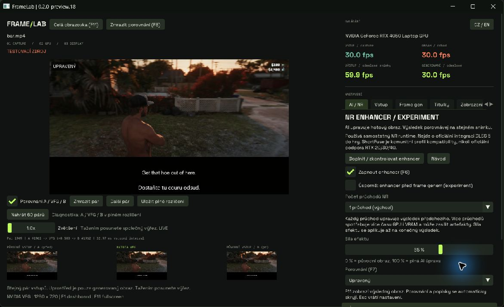

What does memory do in the actual app?
Picture → OCR → filter → selected model and its own memory → displayed caption. Two scenes, 19 real runs.
Results and failures
The current v4 candidate updates memory in the background immediately after accepting a line. Luna distinguished the person at the bar from the garden tool after filler and a topic change. Server Gemma retained the old meaning on one topic change. The first blocking attempt let a key line expire in the queue even though OCR read it; that failure remains in the data.
This is a development pilot of one ambiguous word, not universal translation improvement. The feature is optional and defaults off. The larger 25 Czech and 50 multilingual examples must come from this verified application path, not manually supplied API context. The public preview.18 package does not yet contain this new feature.
What further actual-app runs changed
Updates now start immediately after a caption is accepted so they can finish before the next subtitle. V3 exposed another failure: Gemma confused internal event number 69 with nonexistent source-line ID o69. Memory correctly stopped and fell back to recent history. V4 removes those redundant numbers from model input. All four v4 runs avoided citation errors and displayed all twelve target occurrences. This does not guarantee error-free memory.
In v4 Luna preserved the intended sense of all six targets, with one minor imperative shift. In the bar scene Gemma still ignored an explicit move to the garden despite receiving the new lines, and also made Czech-language errors. Longer memory is therefore not a blanket recommendation: Luna merits wider validation; prefer recent history for this tested server Gemma. A better answer after v3 automatically disabled memory does not count as a success of this feature.
Server Gemma 4 26B A4B Q5_K_S runs on a separate RTX 3090 24 GB computer. The RTX 4050 laptop handles image processing, OCR, VFG and NR. Only text requests go to the server, and network delay is included in the measurements.
How the method was selected: separate text-only checks
After the initial experiment came 40 separate validation captions (400 outputs) and 24 additional confirmation captions (192 outputs). Codex assessed anonymously labelled responses before revealing model/method identities. This table shows the latter set: direct-review scores scaled to 0–100, not accuracy percentages. These are small, clustered tasks; selected memory did not beat ordinary six-line history overall. Its specific purpose is retaining clues through intervening chatter.
| Model | Method | Score 0–100 |
|---|---|---|
| server-gemma4 | No context | 80.21 |
| server-gemma4 | Last six lines | 83.33 |
| server-gemma4 | Last sixteen lines | 79.17 |
| server-gemma4 | Selected original lines | 82.29 |
| gpt-6-luna | No context | 96.88 |
| gpt-6-luna | Last six lines | 97.92 |
| gpt-6-luna | Last sixteen lines | 93.75 |
| gpt-6-luna | Selected original lines | 97.92 |
The same line, actually displayed results
Get that hoe out of here.
Each scene: initial meaning → 20 filler lines including a plate and label → the same line → explicit topic change → the same line. The table contains only captions confirmed by native caption_display events.
| Model / mode | Initially | After filler | After topic change | Latency / FPS |
|---|---|---|---|---|
| Luna / bar / memory off v2 | Dostaň odtud tu děvku. 4/4 | Dostaň odtud tu děvku. 4/4 | Dostaň odtud tu děvku. 1/4 | 2.12 s 59.9 FPS |
| Luna / bar / synchronous prototype v1 | Vyhoďte tu couru odsud. 4/4 | NOT DISPLAYED 0/4 | Dostaňte tu motyku pryč. 4/4 | 4.11 s 59.9 FPS |
| Luna / bar / selected original lines v2 | Vyhoďte tu děvku ven. 4/4 | Dostaňte tu couru odsud. 4/4 | Vypadněte s tou motykou odsud. 3/4 | 2.03 s 59.8 FPS |
| Luna / garden / memory off v2 | Dostaň tu couru pryč. 1/4 | Dostaň tu couru pryč. 1/4 | Dostaň tu couru pryč. 4/4 | 1.92 s 59.9 FPS |
| Luna / garden / selected original lines v2 | Dostaň tu motyku pryč. 4/4 | Vyneste odsud tu motyku. 4/4 | Dostaňte tu couru odsud. 4/4 | 2.26 s 59.9 FPS |
| Luna / bar / recent history v2 | Dostaňte tu couru odsud. 4/4 | Dostaň tu motyku odtud. 1/4 | Vyneste odtud tu motyku. 4/4 | 2.08 s 59.9 FPS |
| Luna / garden / recent history v2 | Dostaň tu motyku pryč. 4/4 | Dostaňte odtud tu motyku. 4/4 | Odveď tu couru odsud. 4/4 | 2.15 s 59.9 FPS |
| Gemma · RTX 3090 / bar / memory off v2 | Dostaň tu děvku pryč. 4/4 | Dostaň tu děvku pryč. 4/4 | Dostaň tu děvku pryč. 1/4 | 1.12 s 58.9 FPS |
| Gemma · RTX 3090 / bar / selected original lines v2 | Dostaň tu mrchu pryč. 3/4 | Dostaň tu mrchu pryč. 3/4 | Dostaň tu mrchu pryč. 1/4 | 1.60 s 59.9 FPS |
| Gemma · RTX 3090 / garden / selected original lines v2 | Dostaň tu motykou pryč. 3/4 | Dostaň tu motykou pryč. 3/4 | Dostaň tu mrchu pryč. 3/4 | 1.41 s 59.9 FPS |
| Gemma · RTX 3090 / garden / memory off v2 | Dostaň tu děvku pryč. 1/4 | Dostaň tu děvku pryč. 1/4 | Dostaň tu děvku pryč. 4/4 | 1.08 s 59.9 FPS |
| Gemma · RTX 3090 / bar / selected original lines v3 | Dostaň tu mrdu pryč. 2/4 | Dostaň tu mrchu pryč. 3/4 · MEMORY STOPPED | Dostaň tu motyku pryč. 4/4 · MEMORY STOPPED | 1.40 s 59.9 FPS |
| Luna / bar / selected original lines v3 | Dostaňte tu couru odtud. 4/4 | Dostaňte tu couru odsud. 4/4 | Vypadněte s tou motykou odsud. 3/4 | 2.05 s 59.9 FPS |
| Gemma · RTX 3090 / garden / selected original lines v3 | Dostaň tu motyku pryč. 4/4 | Dostaň tu motykou pryč. 3/4 | Dostaň tu mrchu pryč. 3/4 | 1.27 s 59.9 FPS |
| Luna / garden / selected original lines v3 | Odnes tu motyku pryč. 4/4 | Vyneste tu motyku ven. 4/4 | Dostaňte tu couru odsud. 4/4 | 1.98 s 59.9 FPS |
| Gemma · RTX 3090 / bar / selected original lines v4 | Dostaň tu mrdu pryč. 2/4 | Dostaň tu mrchu pryč. 3/4 | Dostaň tu mrchu pryč. 1/4 | 1.28 s 59.9 FPS |
| Luna / bar / selected original lines v4 | Vyhoďte tu couru odtud. 4/4 | Vypadněte s tou courou odsud. 3/4 | Odnes tu motyku pryč. 4/4 | 1.86 s 59.9 FPS |
| Gemma · RTX 3090 / garden / selected original lines v4 | Dostaň tu motyku pryč. 4/4 | Dostaň tu motykou pryč. 3/4 | Dostaň tu mrchu pryč. 3/4 | 1.42 s 59.9 FPS |
| Luna / garden / selected original lines v4 | Dostaňte tu motyku pryč. 4/4 | Odnes tu motyku. 4/4 | Dostaňte tu couru odsud. 4/4 | 1.98 s 59.9 FPS |
Latency is the median capture-to-display delay across all displayed captions in that run. FPS is median app-submitted content, not a measurement of the monitor panel. Scores 0–4 assess only the three target occurrences: 4 correct meaning/readable Czech, 3 minor language error/shift, 2 important shift, 1 wrong main meaning, 0 not displayed. This is not a full-dialogue or overall-model score.
V1 waits for memory updates. V2 starts them in the background when the next line arrives. V3 starts them immediately after accepting a new line. V4 also removes internal event numbers from model input, leaving only original-line IDs. The default table shows v4 and controls; check the box for earlier versions.
Actual screenshot from the run

Original window screenshot; neither text nor picture is reconstructed. It captures the delayed bar-scene target with VFG and NR enabled.
Method and limits
RTX 4050 Laptop 6 GB, i5-13420H, 32 GB RAM. Source 1280 × 720 / 30 FPS, VFG 2×, NR 540p / one pass, RapidOCR every 300 ms. Authored English lines are burned into an existing repeated GTA sample: a controlled simulation, not that game’s dialogue. No transcript was injected into translation. The same selected model handled translation and memory selection.
Luna uses actual production prompting including the smart filter, thinking none and default omitted temperature. Server temperature is zero with thinking disabled. Each cell is one run; order is not randomized and network latency varies. With memory off, normal translation caching can wrongly reuse a repeated line after a topic change. Memory bypasses this cache. These are application behaviours, not an isolated model benchmark.
The method retains cited original lines, not AI-generated claims. It updates at most once per eight seconds in the background and discards stale results after source changes. A weaker model can select the wrong lines or ignore the right ones. CUNI failed the memory-building task. Recommendations remain model-dependent; no paid judge was used.
Every run and its actual context
openai-bar-off
26 captions displayed. Drop/expiry events: 0.
Estimated API cost including memory: $0.000642 · 24 completed calls with usage.
We are at a bar, talking about a woman who keeps flirting. · 2.61 s
Jsme v baru a bavíme se o ženě, která pořád flirtuje.
The bartender calls that woman a hoe. · 1.95 s
Barman té ženě říká coura.
Get that hoe out of here. · 3.16 s
Dostaň odtud tu děvku.
Did you hear that noise? · 1.54 s
Slyšel jsi ten zvuk?
It is probably nothing. · 1.84 s
Nejspíš to nic není.
I could use a coffee. · 2.24 s
Dal bych si kafe.
We should keep moving. · 2.94 s
Měli bychom pokračovat.
The weather is getting worse. · 2.30 s
Počasí se zhoršuje.
Wait, I dropped my keys. · 2.35 s
Počkej, upustil jsem klíče.
Do you remember that song? · 2.80 s
Pamatuješ si tu písničku?
Not really. · 2.26 s
Ani ne.
My phone is almost dead. · 2.25 s
Můj telefon je skoro vybitý.
There is a light upstairs. · 1.92 s
Nahoře se svítí.
CLOSE · 2.06 s
Zavři.
Did you lock the door? · 2.15 s
Zamkl jsi dveře?
Yes, twice. · 1.97 s
Ano, dvakrát.
That was a long day. · 2.10 s
To byl dlouhý den.
I know what you mean. · 1.50 s
Vím, jak to myslíš.
We should hurry. · 1.56 s
Měli bychom si pospíšit.
Give me a moment. · 1.73 s
Dej mi chvilku.
Do you have any water? · 1.86 s
Nemáš trochu vody?
There is a bottle in my bag. · 2.15 s
V tašce mám láhev.
Get that hoe out of here. · 1.75 s
Dostaň odtud tu děvku.
We are now clearing weeds in the vegetable garden. · 2.51 s
Teď pleju zeleninovou zahradu.
The gardener left a hoe beside the kitchen door. · 2.33 s
Zahradník nechal motyku vedle kuchyňských dveří.
Get that hoe out of here. · 0.77 s
Dostaň odtud tu děvku.
openai-bar-selected
19 captions displayed. Drop/expiry events: 3.
Estimated API cost including memory: $0.002312 · 30 completed calls with usage.
We are at a bar, talking about a woman who keeps flirting. · 4.54 s
Jsme v baru a bavíme se o ženě, která s námi pořád flirtuje.
The bartender calls that woman a hoe. · 4.07 s
Barman té ženě říká, že je coura.
- We are at a bar, talking about a woman who keeps flirting. (5.5 s)
Get that hoe out of here. · 4.60 s
Vyhoďte tu couru odsud.
- We are at a bar, talking about a woman who keeps flirting. (10.3 s)
- The bartender calls that woman a hoe. (4.8 s)
Did you hear that noise? · 1.79 s
Slyšel jsi ten zvuk?
- We are at a bar, talking about a woman who keeps flirting. (15.4 s)
- The bartender calls that woman a hoe. (9.9 s)
- Get that hoe out of here. (5.1 s)
It is probably nothing. · 3.43 s
To nejspíš nic není.
- We are at a bar, talking about a woman who keeps flirting. (17.0 s)
- The bartender calls that woman a hoe. (11.5 s)
- Get that hoe out of here. (6.7 s)
- Did you hear that noise? (1.6 s)
I could use a coffee. · 4.80 s
Hodila by se mi káva.
- We are at a bar, talking about a woman who keeps flirting. (19.5 s)
- The bartender calls that woman a hoe. (14.1 s)
- Get that hoe out of here. (9.3 s)
- Did you hear that noise? (4.2 s)
- It is probably nothing. (2.6 s)
We should keep moving. · 4.33 s
Měli bychom pokračovat.
- We are at a bar, talking about a woman who keeps flirting. (21.4 s)
- The bartender calls that woman a hoe. (16.0 s)
- Get that hoe out of here. (11.2 s)
- Did you hear that noise? (6.1 s)
- It is probably nothing. (4.5 s)
- I could use a coffee. (1.9 s)
The weather is getting worse. · 3.66 s
Počasí se zhoršuje.
- We are at a bar, talking about a woman who keeps flirting. (23.3 s)
- The bartender calls that woman a hoe. (17.8 s)
- Get that hoe out of here. (13.0 s)
- Did you hear that noise? (7.9 s)
- It is probably nothing. (6.3 s)
- I could use a coffee. (3.8 s)
- We should keep moving. (1.9 s)
Wait, I dropped my keys. · 3.30 s
Počkej, upustil/a jsem klíče.
- We are at a bar, talking about a woman who keeps flirting. (24.9 s)
- The bartender calls that woman a hoe. (19.5 s)
- Get that hoe out of here. (14.7 s)
- Did you hear that noise? (9.6 s)
- It is probably nothing. (8.0 s)
- We should keep moving. (3.5 s)
- The weather is getting worse. (1.6 s)
Do you remember that song? · 2.26 s
Pamatuješ si tu písničku?
- We are at a bar, talking about a woman who keeps flirting. (27.2 s)
- The bartender calls that woman a hoe. (21.7 s)
- Get that hoe out of here. (16.9 s)
- Did you hear that noise? (11.8 s)
- It is probably nothing. (10.2 s)
- The weather is getting worse. (3.9 s)
- Wait, I dropped my keys. (2.2 s)
Not really. · 4.73 s
Ani moc ne.
- We are at a bar, talking about a woman who keeps flirting. (29.4 s)
- The bartender calls that woman a hoe. (23.9 s)
- Get that hoe out of here. (19.1 s)
- Did you hear that noise? (14.0 s)
- It is probably nothing. (12.4 s)
- We should keep moving. (8.0 s)
- Wait, I dropped my keys. (4.5 s)
- Do you remember that song? (2.2 s)
My phone is almost dead. · 4.70 s
Telefon se mi skoro vybil.
- We are at a bar, talking about a woman who keeps flirting. (31.0 s)
- The bartender calls that woman a hoe. (25.6 s)
- Get that hoe out of here. (20.8 s)
- Did you hear that noise? (15.7 s)
- It is probably nothing. (14.1 s)
- We should keep moving. (9.6 s)
- Do you remember that song? (3.9 s)
- Not really. (1.6 s)
There is a light upstairs. · 4.11 s
Nahoře se svítí.
- We are at a bar, talking about a woman who keeps flirting. (33.2 s)
- The bartender calls that woman a hoe. (27.7 s)
- Get that hoe out of here. (22.9 s)
- Did you hear that noise? (17.8 s)
- It is probably nothing. (16.2 s)
- We should keep moving. (11.8 s)
- Not really. (3.8 s)
- My phone is almost dead. (2.2 s)
Did you lock the door? · 4.72 s
Zamkl jsi dveře?
- We are at a bar, talking about a woman who keeps flirting. (39.3 s)
- The bartender calls that woman a hoe. (33.9 s)
- Get that hoe out of here. (29.1 s)
- Did you hear that noise? (24.0 s)
- It is probably nothing. (22.4 s)
- We should keep moving. (17.9 s)
- My phone is almost dead. (8.3 s)
- There is a light upstairs. (6.1 s)
Yes, twice. · 4.35 s
Ano, dvakrát.
- We are at a bar, talking about a woman who keeps flirting. (40.9 s)
- The bartender calls that woman a hoe. (35.4 s)
- Get that hoe out of here. (30.6 s)
- Did you hear that noise? (25.5 s)
- It is probably nothing. (23.9 s)
- We should keep moving. (19.5 s)
- There is a light upstairs. (7.7 s)
- Did you lock the door? (1.6 s)
That was a long day. · 3.66 s
To byl dlouhý den.
- We are at a bar, talking about a woman who keeps flirting. (43.5 s)
- The bartender calls that woman a hoe. (38.0 s)
- Get that hoe out of here. (33.2 s)
- Did you hear that noise? (28.1 s)
- It is probably nothing. (26.5 s)
- We should keep moving. (22.0 s)
- There is a light upstairs. (10.3 s)
- Did you lock the door? (4.1 s)
- Yes, twice. (2.6 s)
We are now clearing weeds in the vegetable garden. · 4.30 s
Teď odplevelujeme zeleninovou zahradu.
- We are at a bar, talking about a woman who keeps flirting. (61.1 s)
- The bartender calls that woman a hoe. (55.6 s)
- Get that hoe out of here. (50.8 s)
- Did you hear that noise? (45.7 s)
- It is probably nothing. (44.1 s)
- We should keep moving. (39.7 s)
- There is a light upstairs. (27.9 s)
- We should hurry. (13.2 s)
- There is a bottle in my bag. (7.6 s)
The gardener left a hoe beside the kitchen door. · 2.21 s
Zahradník nechal motyku vedle kuchyňských dveří.
- We are at a bar, talking about a woman who keeps flirting. (65.9 s)
- The bartender calls that woman a hoe. (60.5 s)
- Get that hoe out of here. (55.7 s)
- Did you hear that noise? (50.6 s)
- It is probably nothing. (49.0 s)
- We should keep moving. (44.5 s)
- There is a light upstairs. (32.7 s)
- There is a bottle in my bag. (12.4 s)
- We are now clearing weeds in the vegetable garden. (4.8 s)
Get that hoe out of here. · 3.78 s
Dostaňte tu motyku pryč.
- We are at a bar, talking about a woman who keeps flirting. (71.4 s)
- The bartender calls that woman a hoe. (66.0 s)
- Get that hoe out of here. (61.2 s)
- Did you hear that noise? (56.1 s)
- It is probably nothing. (54.5 s)
- We should keep moving. (50.0 s)
- There is a light upstairs. (38.2 s)
- We should hurry. (23.5 s)
- We are now clearing weeds in the vegetable garden. (10.3 s)
- The gardener left a hoe beside the kitchen door. (5.5 s)
openai-bar-selected-async-v2
25 captions displayed. Drop/expiry events: 0.
Estimated API cost including memory: $0.002469 · 33 completed calls with usage.
We are at a bar, talking about a woman who keeps flirting. · 1.93 s
Jsme v baru a bavíme se o ženě, která pořád flirtuje.
The bartender calls that woman a hoe. · 2.34 s
Barman té ženě říká coura.
- We are at a bar, talking about a woman who keeps flirting. (5.1 s)
Get that hoe out of here. · 2.85 s
Vyhoďte tu děvku ven.
- We are at a bar, talking about a woman who keeps flirting. (10.3 s)
- The bartender calls that woman a hoe. (5.2 s)
Did you hear that noise? · 1.83 s
Slyšel jsi ten hluk?
- We are at a bar, talking about a woman who keeps flirting. (15.1 s)
- The bartender calls that woman a hoe. (10.0 s)
- Get that hoe out of here. (4.8 s)
It is probably nothing. · 2.12 s
To asi nic není.
- We are at a bar, talking about a woman who keeps flirting. (17.3 s)
- The bartender calls that woman a hoe. (12.2 s)
- Get that hoe out of here. (7.0 s)
- Did you hear that noise? (2.2 s)
I could use a coffee. · 2.08 s
Dal bych si kávu.
- We are at a bar, talking about a woman who keeps flirting. (19.3 s)
- The bartender calls that woman a hoe. (14.2 s)
- Did you hear that noise? (4.2 s)
- It is probably nothing. (2.0 s)
We should keep moving. · 1.97 s
Měli bychom pokračovat.
- We are at a bar, talking about a woman who keeps flirting. (21.5 s)
- The bartender calls that woman a hoe. (16.4 s)
- It is probably nothing. (4.2 s)
- I could use a coffee. (2.2 s)
The weather is getting worse. · 2.18 s
Počasí se zhoršuje.
- We are at a bar, talking about a woman who keeps flirting. (23.2 s)
- The bartender calls that woman a hoe. (18.1 s)
- Get that hoe out of here. (12.9 s)
- Did you hear that noise? (8.0 s)
- It is probably nothing. (5.8 s)
- I could use a coffee. (3.9 s)
- We should keep moving. (1.6 s)
Wait, I dropped my keys. · 1.83 s
Počkej, upustil(a) jsem klíče.
- We are at a bar, talking about a woman who keeps flirting. (25.1 s)
- The bartender calls that woman a hoe. (20.0 s)
- Get that hoe out of here. (14.8 s)
- Did you hear that noise? (9.9 s)
- It is probably nothing. (7.7 s)
- We should keep moving. (3.5 s)
- The weather is getting worse. (1.9 s)
Do you remember that song? · 1.96 s
Pamatuješ si tu písničku?
- We are at a bar, talking about a woman who keeps flirting. (27.3 s)
- The bartender calls that woman a hoe. (22.2 s)
- Get that hoe out of here. (17.0 s)
- Did you hear that noise? (12.2 s)
- It is probably nothing. (10.0 s)
- The weather is getting worse. (4.1 s)
- Wait, I dropped my keys. (2.2 s)
Not really. · 2.05 s
Ani ne.
- We are at a bar, talking about a woman who keeps flirting. (30.1 s)
- The bartender calls that woman a hoe. (25.0 s)
- Get that hoe out of here. (19.8 s)
- Did you hear that noise? (15.0 s)
- It is probably nothing. (12.8 s)
- We should keep moving. (8.6 s)
- Wait, I dropped my keys. (5.1 s)
- Do you remember that song? (2.8 s)
My phone is almost dead. · 2.25 s
Telefon se mi skoro vybil.
- We are at a bar, talking about a woman who keeps flirting. (31.1 s)
- The bartender calls that woman a hoe. (26.0 s)
- Get that hoe out of here. (20.8 s)
- Did you hear that noise? (16.0 s)
- It is probably nothing. (13.8 s)
- We should keep moving. (9.6 s)
- Do you remember that song? (3.8 s)
- Not really. (1.0 s)
There is a light upstairs. · 1.85 s
Nahoře se svítí.
- We are at a bar, talking about a woman who keeps flirting. (33.4 s)
- The bartender calls that woman a hoe. (28.3 s)
- Get that hoe out of here. (23.1 s)
- Did you hear that noise? (18.3 s)
- It is probably nothing. (16.1 s)
- We should keep moving. (11.9 s)
- Not really. (3.3 s)
- My phone is almost dead. (2.3 s)
Did you lock the door? · 2.11 s
Zamkl jsi dveře?
- We are at a bar, talking about a woman who keeps flirting. (39.2 s)
- The bartender calls that woman a hoe. (34.1 s)
- Get that hoe out of here. (28.9 s)
- Did you hear that noise? (24.0 s)
- It is probably nothing. (21.8 s)
- We should keep moving. (17.6 s)
- My phone is almost dead. (8.0 s)
- There is a light upstairs. (5.8 s)
Yes, twice. · 1.73 s
Ano, dvakrát.
- We are at a bar, talking about a woman who keeps flirting. (41.1 s)
- The bartender calls that woman a hoe. (36.0 s)
- Get that hoe out of here. (30.8 s)
- Did you hear that noise? (26.0 s)
- It is probably nothing. (23.8 s)
- We should keep moving. (19.6 s)
- There is a light upstairs. (7.7 s)
- Did you lock the door? (1.9 s)
That was a long day. · 1.89 s
To byl dlouhý den.
- We are at a bar, talking about a woman who keeps flirting. (43.3 s)
- The bartender calls that woman a hoe. (38.2 s)
- Get that hoe out of here. (33.0 s)
- Did you hear that noise? (28.2 s)
- It is probably nothing. (26.0 s)
- We should keep moving. (21.8 s)
- There is a light upstairs. (9.9 s)
- Did you lock the door? (4.2 s)
- Yes, twice. (2.2 s)
I know what you mean. · 1.93 s
Vím, jak to myslíš.
- We are at a bar, talking about a woman who keeps flirting. (45.2 s)
- The bartender calls that woman a hoe. (40.1 s)
- Get that hoe out of here. (34.9 s)
- Did you hear that noise? (30.1 s)
- It is probably nothing. (27.9 s)
- We should keep moving. (23.7 s)
- There is a light upstairs. (11.8 s)
- Yes, twice. (4.1 s)
- That was a long day. (1.9 s)
We should hurry. · 2.08 s
Měli bychom si pospíšit.
- We are at a bar, talking about a woman who keeps flirting. (47.8 s)
- The bartender calls that woman a hoe. (42.7 s)
- Get that hoe out of here. (37.5 s)
- Did you hear that noise? (32.7 s)
- It is probably nothing. (30.5 s)
- We should keep moving. (26.3 s)
- There is a light upstairs. (14.4 s)
- That was a long day. (4.5 s)
- I know what you mean. (2.6 s)
Give me a moment. · 2.06 s
Dej mi chvilku.
- We are at a bar, talking about a woman who keeps flirting. (49.1 s)
- The bartender calls that woman a hoe. (44.0 s)
- Get that hoe out of here. (38.8 s)
- Did you hear that noise? (33.9 s)
- It is probably nothing. (31.7 s)
- We should keep moving. (27.5 s)
- There is a light upstairs. (15.7 s)
- I know what you mean. (3.8 s)
- We should hurry. (1.3 s)
Do you have any water? · 1.96 s
Nemáš trochu vody?
- We are at a bar, talking about a woman who keeps flirting. (51.3 s)
- Get that hoe out of here. (41.0 s)
- Did you hear that noise? (36.2 s)
- It is probably nothing. (34.0 s)
- We should keep moving. (29.8 s)
- There is a light upstairs. (17.9 s)
- We should hurry. (3.5 s)
- Give me a moment. (2.3 s)
There is a bottle in my bag. · 2.06 s
V tašce mám láhev.
- We are at a bar, talking about a woman who keeps flirting. (53.0 s)
- Get that hoe out of here. (42.7 s)
- Did you hear that noise? (37.9 s)
- It is probably nothing. (35.7 s)
- We should keep moving. (31.5 s)
- There is a light upstairs. (19.6 s)
- Give me a moment. (3.9 s)
- Do you have any water? (1.7 s)
Get that hoe out of here. · 2.03 s
Dostaňte tu couru odsud.
- We are at a bar, talking about a woman who keeps flirting. (55.3 s)
- Get that hoe out of here. (45.0 s)
- Did you hear that noise? (40.1 s)
- It is probably nothing. (37.9 s)
- We should keep moving. (33.7 s)
- There is a light upstairs. (21.9 s)
- Do you have any water? (3.9 s)
- There is a bottle in my bag. (2.3 s)
We are now clearing weeds in the vegetable garden. · 1.98 s
Teď odstraňujeme plevel ze zeleninové zahrádky.
- We are at a bar, talking about a woman who keeps flirting. (61.6 s)
- Get that hoe out of here. (51.3 s)
- Did you hear that noise? (46.5 s)
- It is probably nothing. (44.3 s)
- We should keep moving. (40.1 s)
- There is a light upstairs. (28.2 s)
- There is a bottle in my bag. (8.6 s)
- Get that hoe out of here. (6.3 s)
The gardener left a hoe beside the kitchen door. · 1.98 s
Zahradník nechal motyku vedle kuchyňských dveří.
- We are at a bar, talking about a woman who keeps flirting. (66.0 s)
- Get that hoe out of here. (55.7 s)
- Did you hear that noise? (50.9 s)
- It is probably nothing. (48.7 s)
- We should keep moving. (44.5 s)
- There is a light upstairs. (32.6 s)
- Get that hoe out of here. (10.7 s)
- We are now clearing weeds in the vegetable garden. (4.4 s)
Get that hoe out of here. · 2.05 s
Vypadněte s tou motykou odsud.
- We are at a bar, talking about a woman who keeps flirting. (71.5 s)
- Get that hoe out of here. (61.2 s)
- Did you hear that noise? (56.4 s)
- It is probably nothing. (54.2 s)
- We should keep moving. (50.0 s)
- There is a light upstairs. (38.1 s)
- We are now clearing weeds in the vegetable garden. (9.9 s)
- The gardener left a hoe beside the kitchen door. (5.5 s)
openai-garden-off-async-v2
24 captions displayed. Drop/expiry events: 1.
Estimated API cost including memory: $0.000613 · 23 completed calls with usage.
We are clearing weeds from the vegetable garden. · 2.40 s
Odplevelujeme zeleninovou zahradu.
The gardener left a hoe beside the kitchen door. · 1.83 s
Zahradník nechal motyku vedle kuchyňských dveří.
Get that hoe out of here. · 1.72 s
Dostaň tu couru pryč.
Did you hear that noise? · 1.92 s
Slyšel jsi ten hluk?
It is probably nothing. · 1.92 s
To nejspíš nic nebude.
I could use a coffee. · 1.75 s
Dal bych si kafe.
We should keep moving. · 2.23 s
Měli bychom pokračovat.
The weather is getting worse. · 1.91 s
Počasí se zhoršuje.
Wait, I dropped my keys. · 2.07 s
Počkej, upustil jsem klíče.
Do you remember that song? · 1.51 s
Pamatuješ si tu písničku?
Not really. · 1.82 s
Ani ne.
My phone is almost dead. · 1.72 s
Telefon se mi skoro vybil.
There is a light upstairs. · 1.83 s
Nahoře se svítí.
CLOSE · 2.42 s
Zavři.
Did you lock the door? · 2.15 s
Zamkl jsi dveře?
Yes, twice. · 1.53 s
Ano, dvakrát.
That was a long day. · 1.76 s
To byl dlouhý den.
Give me a moment. · 5.60 s
Dej mi chvilku.
Do you have any water? · 5.20 s
Nemáš trochu vody?
There is a bottle in my bag. · 4.17 s
V tašce mám láhev.
Get that hoe out of here. · 3.50 s
Dostaň tu couru pryč.
We are now talking about the woman at the bar. · 2.29 s
Teď mluvíme o té ženě v baru.
The bartender calls her a hoe because she flirts with everyone. · 2.37 s
Barman jí říká coura, protože flirtuje s každým.
Get that hoe out of here. · 0.69 s
Dostaň tu couru pryč.
openai-garden-selected-async-v2
25 captions displayed. Drop/expiry events: 0.
Estimated API cost including memory: $0.002584 · 33 completed calls with usage.
We are clearing weeds from the vegetable garden. · 2.18 s
Plevelíme zeleninovou zahrádku.
The gardener left a hoe beside the kitchen door. · 2.26 s
Zahradník nechal motyku vedle kuchyňských dveří.
- We are clearing weeds from the vegetable garden. (5.1 s)
Get that hoe out of here. · 1.79 s
Dostaň tu motyku pryč.
- We are clearing weeds from the vegetable garden. (9.9 s)
- The gardener left a hoe beside the kitchen door. (4.8 s)
Did you hear that noise? · 2.59 s
Slyšel jsi ten hluk?
- We are clearing weeds from the vegetable garden. (15.0 s)
- The gardener left a hoe beside the kitchen door. (9.9 s)
- Get that hoe out of here. (5.1 s)
It is probably nothing. · 2.52 s
Nejspíš o nic nejde.
- We are clearing weeds from the vegetable garden. (17.2 s)
- The gardener left a hoe beside the kitchen door. (12.1 s)
- Get that hoe out of here. (7.3 s)
- Did you hear that noise? (2.3 s)
I could use a coffee. · 3.56 s
Dal/a bych si kávu.
- We are clearing weeds from the vegetable garden. (18.8 s)
- The gardener left a hoe beside the kitchen door. (13.7 s)
- Did you hear that noise? (3.9 s)
- It is probably nothing. (1.6 s)
We should keep moving. · 3.24 s
Měli bychom pokračovat.
- We are clearing weeds from the vegetable garden. (20.7 s)
- The gardener left a hoe beside the kitchen door. (15.6 s)
- It is probably nothing. (3.5 s)
- I could use a coffee. (1.9 s)
The weather is getting worse. · 3.47 s
Počasí se zhoršuje.
- We are clearing weeds from the vegetable garden. (23.0 s)
- The gardener left a hoe beside the kitchen door. (17.9 s)
- Get that hoe out of here. (13.1 s)
- Did you hear that noise? (8.0 s)
- It is probably nothing. (5.7 s)
- I could use a coffee. (4.1 s)
- We should keep moving. (2.2 s)
Wait, I dropped my keys. · 4.06 s
Počkej, upustil(a) jsem klíče.
- We are clearing weeds from the vegetable garden. (25.2 s)
- The gardener left a hoe beside the kitchen door. (20.1 s)
- Get that hoe out of here. (15.3 s)
- Did you hear that noise? (10.2 s)
- It is probably nothing. (8.0 s)
- We should keep moving. (4.5 s)
- The weather is getting worse. (2.2 s)
Do you remember that song? · 3.81 s
Pamatuješ si tu písničku?
- We are clearing weeds from the vegetable garden. (27.1 s)
- The gardener left a hoe beside the kitchen door. (22.0 s)
- Get that hoe out of here. (17.2 s)
- Did you hear that noise? (12.1 s)
- It is probably nothing. (9.9 s)
- The weather is getting worse. (4.1 s)
- Wait, I dropped my keys. (1.9 s)
Not really. · 3.08 s
Ani ne.
- We are clearing weeds from the vegetable garden. (29.4 s)
- The gardener left a hoe beside the kitchen door. (24.3 s)
- Get that hoe out of here. (19.5 s)
- Did you hear that noise? (14.4 s)
- It is probably nothing. (12.1 s)
- We should keep moving. (8.6 s)
- The weather is getting worse. (6.4 s)
- Wait, I dropped my keys. (4.2 s)
- Do you remember that song? (2.3 s)
My phone is almost dead. · 2.99 s
Můj telefon se skoro vybil.
- We are clearing weeds from the vegetable garden. (30.9 s)
- The gardener left a hoe beside the kitchen door. (25.8 s)
- Get that hoe out of here. (21.0 s)
- Did you hear that noise? (16.0 s)
- It is probably nothing. (13.7 s)
- We should keep moving. (10.2 s)
- The weather is getting worse. (8.0 s)
- Wait, I dropped my keys. (5.7 s)
- Do you remember that song? (3.8 s)
- Not really. (1.6 s)
There is a light upstairs. · 2.19 s
Nahoře se svítí.
- We are clearing weeds from the vegetable garden. (33.2 s)
- The gardener left a hoe beside the kitchen door. (28.1 s)
- Get that hoe out of here. (23.3 s)
- Did you hear that noise? (18.2 s)
- It is probably nothing. (16.0 s)
- We should keep moving. (12.5 s)
- The weather is getting worse. (10.2 s)
- Wait, I dropped my keys. (8.0 s)
- Not really. (3.8 s)
- My phone is almost dead. (2.3 s)
Did you lock the door? · 2.63 s
Zamkl/a jsi dveře?
- We are clearing weeds from the vegetable garden. (39.0 s)
- The gardener left a hoe beside the kitchen door. (33.9 s)
- Get that hoe out of here. (29.1 s)
- Did you hear that noise? (24.1 s)
- It is probably nothing. (21.8 s)
- We should keep moving. (18.3 s)
- The weather is getting worse. (16.1 s)
- Wait, I dropped my keys. (13.8 s)
- My phone is almost dead. (8.1 s)
- There is a light upstairs. (5.8 s)
Yes, twice. · 2.31 s
Ano, dvakrát.
- We are clearing weeds from the vegetable garden. (41.2 s)
- The gardener left a hoe beside the kitchen door. (36.1 s)
- Get that hoe out of here. (31.3 s)
- Did you hear that noise? (26.3 s)
- It is probably nothing. (24.0 s)
- We should keep moving. (20.5 s)
- The weather is getting worse. (18.3 s)
- Wait, I dropped my keys. (16.0 s)
- There is a light upstairs. (8.0 s)
- Did you lock the door? (2.2 s)
That was a long day. · 1.88 s
To byl dlouhý den.
- We are clearing weeds from the vegetable garden. (42.9 s)
- The gardener left a hoe beside the kitchen door. (37.8 s)
- Get that hoe out of here. (33.0 s)
- Did you hear that noise? (27.9 s)
- It is probably nothing. (25.6 s)
- We should keep moving. (22.1 s)
- The weather is getting worse. (19.9 s)
- Wait, I dropped my keys. (17.7 s)
- Did you lock the door? (3.8 s)
- Yes, twice. (1.6 s)
I know what you mean. · 1.92 s
Vím, jak to myslíš.
- We are clearing weeds from the vegetable garden. (45.1 s)
- The gardener left a hoe beside the kitchen door. (40.0 s)
- Get that hoe out of here. (35.2 s)
- Did you hear that noise? (30.1 s)
- It is probably nothing. (27.9 s)
- We should keep moving. (24.4 s)
- The weather is getting worse. (22.1 s)
- Wait, I dropped my keys. (19.9 s)
- Yes, twice. (3.9 s)
- That was a long day. (2.2 s)
We should hurry. · 1.94 s
Měli bychom si pospíšit.
- We are clearing weeds from the vegetable garden. (47.7 s)
- The gardener left a hoe beside the kitchen door. (42.6 s)
- Get that hoe out of here. (37.8 s)
- Did you hear that noise? (32.7 s)
- It is probably nothing. (30.4 s)
- We should keep moving. (26.9 s)
- The weather is getting worse. (24.7 s)
- Wait, I dropped my keys. (22.5 s)
- That was a long day. (4.8 s)
- I know what you mean. (2.6 s)
Give me a moment. · 1.81 s
Dej mi chvilku.
- We are clearing weeds from the vegetable garden. (49.3 s)
- The gardener left a hoe beside the kitchen door. (44.2 s)
- Get that hoe out of here. (39.4 s)
- Did you hear that noise? (34.3 s)
- It is probably nothing. (32.0 s)
- We should keep moving. (28.5 s)
- The weather is getting worse. (26.3 s)
- Wait, I dropped my keys. (24.1 s)
- I know what you mean. (4.2 s)
- We should hurry. (1.6 s)
Do you have any water? · 1.68 s
Máš nějakou vodu?
- We are clearing weeds from the vegetable garden. (51.2 s)
- The gardener left a hoe beside the kitchen door. (46.1 s)
- Get that hoe out of here. (41.3 s)
- Did you hear that noise? (36.2 s)
- It is probably nothing. (33.9 s)
- We should keep moving. (30.4 s)
- The weather is getting worse. (28.2 s)
- Wait, I dropped my keys. (26.0 s)
- We should hurry. (3.5 s)
- Give me a moment. (1.9 s)
There is a bottle in my bag. · 1.86 s
V tašce mám láhev.
- We are clearing weeds from the vegetable garden. (52.8 s)
- The gardener left a hoe beside the kitchen door. (47.7 s)
- Get that hoe out of here. (42.9 s)
- Did you hear that noise? (37.8 s)
- It is probably nothing. (35.5 s)
- We should keep moving. (32.0 s)
- The weather is getting worse. (29.8 s)
- Wait, I dropped my keys. (27.6 s)
- Give me a moment. (3.5 s)
- Do you have any water? (1.6 s)
Get that hoe out of here. · 1.76 s
Vyneste odsud tu motyku.
- We are clearing weeds from the vegetable garden. (55.0 s)
- The gardener left a hoe beside the kitchen door. (49.9 s)
- Get that hoe out of here. (45.1 s)
- Did you hear that noise? (40.1 s)
- It is probably nothing. (37.8 s)
- We should keep moving. (34.3 s)
- The weather is getting worse. (32.1 s)
- Wait, I dropped my keys. (29.8 s)
- Do you have any water? (3.9 s)
- There is a bottle in my bag. (2.3 s)
We are now talking about the woman at the bar. · 2.43 s
Teď mluvíme o té ženě u baru.
- We are clearing weeds from the vegetable garden. (61.1 s)
- The gardener left a hoe beside the kitchen door. (56.0 s)
- Get that hoe out of here. (51.2 s)
- Did you hear that noise? (46.2 s)
- It is probably nothing. (43.9 s)
- We should keep moving. (40.4 s)
- The weather is getting worse. (38.2 s)
- Wait, I dropped my keys. (35.9 s)
- There is a bottle in my bag. (8.4 s)
- Get that hoe out of here. (6.1 s)
The bartender calls her a hoe because she flirts with everyone. · 2.12 s
Barman jí říká coura, protože flirtuje s každým.
- We are clearing weeds from the vegetable garden. (65.9 s)
- The gardener left a hoe beside the kitchen door. (60.8 s)
- Get that hoe out of here. (56.0 s)
- Did you hear that noise? (50.9 s)
- It is probably nothing. (48.7 s)
- Wait, I dropped my keys. (40.7 s)
- We should hurry. (18.2 s)
- Get that hoe out of here. (10.9 s)
- We are now talking about the woman at the bar. (4.8 s)
Get that hoe out of here. · 1.90 s
Dostaňte tu couru odsud.
- We are clearing weeds from the vegetable garden. (71.6 s)
- The gardener left a hoe beside the kitchen door. (66.5 s)
- Get that hoe out of here. (61.7 s)
- Did you hear that noise? (56.7 s)
- It is probably nothing. (54.4 s)
- Wait, I dropped my keys. (46.4 s)
- We should hurry. (24.0 s)
- We are now talking about the woman at the bar. (10.5 s)
- The bartender calls her a hoe because she flirts with everyone. (5.7 s)
openai-bar-recent-async-v2
25 captions displayed. Drop/expiry events: 0.
Estimated API cost including memory: $0.002091 · 26 completed calls with usage.
We are at a bar, talking about a woman who keeps flirting. · 2.51 s
Jsme v baru a bavíme se o ženě, která pořád flirtuje.
The bartender calls that woman a hoe. · 2.28 s
Barman té ženě říká coura.
- We are at a bar, talking about a woman who keeps flirting. (5.2 s)
Get that hoe out of here. · 2.05 s
Dostaňte tu couru odsud.
- We are at a bar, talking about a woman who keeps flirting. (10.3 s)
- The bartender calls that woman a hoe. (5.1 s)
Did you hear that noise? · 2.83 s
Slyšel jsi ten zvuk?
- We are at a bar, talking about a woman who keeps flirting. (15.3 s)
- The bartender calls that woman a hoe. (10.1 s)
- Get that hoe out of here. (5.1 s)
It is probably nothing. · 2.26 s
Nejspíš o nic nejde.
- We are at a bar, talking about a woman who keeps flirting. (17.5 s)
- The bartender calls that woman a hoe. (12.3 s)
- Get that hoe out of here. (7.3 s)
- Did you hear that noise? (2.2 s)
I could use a coffee. · 2.03 s
Dal bych si kafe.
- We are at a bar, talking about a woman who keeps flirting. (19.5 s)
- The bartender calls that woman a hoe. (14.3 s)
- Get that hoe out of here. (9.2 s)
- Did you hear that noise? (4.1 s)
- It is probably nothing. (1.9 s)
We should keep moving. · 2.17 s
Měli bychom pokračovat.
- We are at a bar, talking about a woman who keeps flirting. (21.4 s)
- The bartender calls that woman a hoe. (16.2 s)
- Get that hoe out of here. (11.1 s)
- Did you hear that noise? (6.0 s)
- It is probably nothing. (3.8 s)
- I could use a coffee. (1.9 s)
The weather is getting worse. · 2.40 s
Počasí se zhoršuje.
- The bartender calls that woman a hoe. (18.1 s)
- Get that hoe out of here. (13.0 s)
- Did you hear that noise? (8.0 s)
- It is probably nothing. (5.8 s)
- I could use a coffee. (3.8 s)
- We should keep moving. (1.9 s)
Wait, I dropped my keys. · 1.87 s
Počkej, upustil jsem klíče.
- Get that hoe out of here. (15.0 s)
- Did you hear that noise? (9.9 s)
- It is probably nothing. (7.7 s)
- I could use a coffee. (5.8 s)
- We should keep moving. (3.9 s)
- The weather is getting worse. (1.9 s)
Do you remember that song? · 1.97 s
Pamatuješ si tu písničku?
- Did you hear that noise? (12.1 s)
- It is probably nothing. (9.9 s)
- I could use a coffee. (8.0 s)
- We should keep moving. (6.1 s)
- The weather is getting worse. (4.1 s)
- Wait, I dropped my keys. (2.2 s)
Not really. · 1.89 s
Ani ne.
- It is probably nothing. (12.1 s)
- I could use a coffee. (10.2 s)
- We should keep moving. (8.3 s)
- The weather is getting worse. (6.4 s)
- Wait, I dropped my keys. (4.4 s)
- Do you remember that song? (2.2 s)
My phone is almost dead. · 2.02 s
Telefon už má skoro vybitou baterii.
- I could use a coffee. (11.5 s)
- We should keep moving. (9.6 s)
- The weather is getting worse. (7.6 s)
- Wait, I dropped my keys. (5.7 s)
- Do you remember that song? (3.5 s)
- Not really. (1.3 s)
There is a light upstairs. · 2.70 s
Nahoře se svítí.
- We should keep moving. (11.8 s)
- The weather is getting worse. (9.8 s)
- Wait, I dropped my keys. (7.9 s)
- Do you remember that song? (5.7 s)
- Not really. (3.5 s)
- My phone is almost dead. (2.2 s)
Did you lock the door? · 2.08 s
Zamkl jsi dveře?
- The weather is getting worse. (16.0 s)
- Wait, I dropped my keys. (14.0 s)
- Do you remember that song? (11.8 s)
- Not really. (9.6 s)
- My phone is almost dead. (8.3 s)
- There is a light upstairs. (6.1 s)
Yes, twice. · 2.09 s
Ano, dvakrát.
- Wait, I dropped my keys. (16.3 s)
- Do you remember that song? (14.1 s)
- Not really. (11.9 s)
- My phone is almost dead. (10.6 s)
- There is a light upstairs. (8.4 s)
- Did you lock the door? (2.3 s)
That was a long day. · 2.05 s
To byl dlouhý den.
- Do you remember that song? (16.0 s)
- Not really. (13.8 s)
- My phone is almost dead. (12.5 s)
- There is a light upstairs. (10.3 s)
- Did you lock the door? (4.2 s)
- Yes, twice. (1.9 s)
I know what you mean. · 1.63 s
Vím, co myslíš.
- Not really. (15.8 s)
- My phone is almost dead. (14.5 s)
- There is a light upstairs. (12.3 s)
- Did you lock the door? (6.2 s)
- Yes, twice. (3.9 s)
- That was a long day. (2.0 s)
We should hurry. · 2.48 s
Měli bychom si pospíšit.
- My phone is almost dead. (16.7 s)
- There is a light upstairs. (14.5 s)
- Did you lock the door? (8.4 s)
- Yes, twice. (6.1 s)
- That was a long day. (4.2 s)
- I know what you mean. (2.2 s)
Give me a moment. · 2.19 s
Dej mi chvilku.
- There is a light upstairs. (16.1 s)
- Did you lock the door? (10.0 s)
- Yes, twice. (7.7 s)
- That was a long day. (5.8 s)
- I know what you mean. (3.8 s)
- We should hurry. (1.6 s)
Do you have any water? · 2.01 s
Nemáš nějakou vodu?
- Did you lock the door? (11.9 s)
- Yes, twice. (9.6 s)
- That was a long day. (7.7 s)
- I know what you mean. (5.7 s)
- We should hurry. (3.5 s)
- Give me a moment. (1.9 s)
There is a bottle in my bag. · 1.68 s
V tašce mám láhev.
- Yes, twice. (11.9 s)
- That was a long day. (9.9 s)
- I know what you mean. (8.0 s)
- We should hurry. (5.7 s)
- Give me a moment. (4.1 s)
- Do you have any water? (2.3 s)
Get that hoe out of here. · 1.75 s
Dostaň tu motyku odtud.
- That was a long day. (11.6 s)
- I know what you mean. (9.6 s)
- We should hurry. (7.4 s)
- Give me a moment. (5.8 s)
- Do you have any water? (3.9 s)
- There is a bottle in my bag. (1.6 s)
We are now clearing weeds in the vegetable garden. · 2.04 s
Teď odstraňujeme plevel v zeleninové zahradě.
- I know what you mean. (15.8 s)
- We should hurry. (13.6 s)
- Give me a moment. (12.0 s)
- Do you have any water? (10.1 s)
- There is a bottle in my bag. (7.9 s)
- Get that hoe out of here. (6.2 s)
The gardener left a hoe beside the kitchen door. · 2.35 s
Zahradník nechal motyku vedle kuchyňských dveří.
- We should hurry. (18.7 s)
- Give me a moment. (17.1 s)
- Do you have any water? (15.3 s)
- There is a bottle in my bag. (13.0 s)
- Get that hoe out of here. (11.4 s)
- We are now clearing weeds in the vegetable garden. (5.1 s)
Get that hoe out of here. · 3.80 s
Vyneste odtud tu motyku.
- We should hurry. (23.5 s)
- Give me a moment. (21.9 s)
- Do you have any water? (20.1 s)
- There is a bottle in my bag. (17.8 s)
- We are now clearing weeds in the vegetable garden. (9.9 s)
- The gardener left a hoe beside the kitchen door. (4.8 s)
openai-garden-recent-async-v2
26 captions displayed. Drop/expiry events: 0.
Estimated API cost including memory: $0.002090 · 26 completed calls with usage.
We are clearing weeds from the vegetable garden. · 2.97 s
Vytrháváme plevel v zeleninové zahrádce.
The gardener left a hoe beside the kitchen door. · 2.63 s
Zahradník nechal motyku vedle kuchyňských dveří.
- We are clearing weeds from the vegetable garden. (5.1 s)
Get that hoe out of here. · 1.99 s
Dostaň tu motyku pryč.
- We are clearing weeds from the vegetable garden. (10.0 s)
- The gardener left a hoe beside the kitchen door. (5.0 s)
Did you hear that noise? · 1.71 s
Slyšel jsi ten hluk?
- We are clearing weeds from the vegetable garden. (15.1 s)
- The gardener left a hoe beside the kitchen door. (10.0 s)
- Get that hoe out of here. (5.0 s)
It is probably nothing. · 2.05 s
Pravděpodobně to nic není.
- We are clearing weeds from the vegetable garden. (16.7 s)
- The gardener left a hoe beside the kitchen door. (11.6 s)
- Get that hoe out of here. (6.7 s)
- Did you hear that noise? (1.6 s)
I could use a coffee. · 2.80 s
Dal bych si kávu.
- We are clearing weeds from the vegetable garden. (18.9 s)
- The gardener left a hoe beside the kitchen door. (13.9 s)
- Get that hoe out of here. (8.9 s)
- Did you hear that noise? (3.9 s)
- It is probably nothing. (2.2 s)
We should keep moving. · 2.48 s
Měli bychom pokračovat.
- We are clearing weeds from the vegetable garden. (21.1 s)
- The gardener left a hoe beside the kitchen door. (16.1 s)
- Get that hoe out of here. (11.1 s)
- Did you hear that noise? (6.1 s)
- It is probably nothing. (4.4 s)
- I could use a coffee. (2.2 s)
The weather is getting worse. · 2.12 s
Počasí se zhoršuje.
- The gardener left a hoe beside the kitchen door. (17.7 s)
- Get that hoe out of here. (12.7 s)
- Did you hear that noise? (7.7 s)
- It is probably nothing. (6.0 s)
- I could use a coffee. (3.8 s)
- We should keep moving. (1.6 s)
Wait, I dropped my keys. · 1.89 s
Počkej, upustil jsem klíče.
- Get that hoe out of here. (14.6 s)
- Did you hear that noise? (9.6 s)
- It is probably nothing. (7.9 s)
- I could use a coffee. (5.7 s)
- We should keep moving. (3.5 s)
- The weather is getting worse. (1.9 s)
Do you remember that song? · 1.75 s
Pamatuješ si tu písničku?
- Did you hear that noise? (11.9 s)
- It is probably nothing. (10.2 s)
- I could use a coffee. (8.0 s)
- We should keep moving. (5.8 s)
- The weather is getting worse. (4.2 s)
- Wait, I dropped my keys. (2.3 s)
Not really. · 2.11 s
Ani ne.
- It is probably nothing. (12.8 s)
- I could use a coffee. (10.5 s)
- We should keep moving. (8.3 s)
- The weather is getting worse. (6.7 s)
- Wait, I dropped my keys. (4.8 s)
- Do you remember that song? (2.5 s)
My phone is almost dead. · 3.05 s
Telefon už se mi skoro vybil.
- I could use a coffee. (11.8 s)
- We should keep moving. (9.6 s)
- The weather is getting worse. (8.0 s)
- Wait, I dropped my keys. (6.1 s)
- Do you remember that song? (3.8 s)
- Not really. (1.3 s)
There is a light upstairs. · 2.05 s
Nahoře se svítí.
- We should keep moving. (11.8 s)
- The weather is getting worse. (10.2 s)
- Wait, I dropped my keys. (8.3 s)
- Do you remember that song? (6.0 s)
- Not really. (3.5 s)
- My phone is almost dead. (2.2 s)
CLOSE · 2.21 s
ZAVŘÍT
- The weather is getting worse. (14.1 s)
- Wait, I dropped my keys. (12.2 s)
- Do you remember that song? (9.9 s)
- Not really. (7.3 s)
- My phone is almost dead. (6.0 s)
- There is a light upstairs. (3.8 s)
Did you lock the door? · 1.76 s
Zamkl/a jsi dveře?
- Wait, I dropped my keys. (14.4 s)
- Do you remember that song? (12.1 s)
- Not really. (9.6 s)
- My phone is almost dead. (8.3 s)
- There is a light upstairs. (6.1 s)
- CLOSE (2.2 s)
Yes, twice. · 2.19 s
Ano, dvakrát.
- Do you remember that song? (14.3 s)
- Not really. (11.8 s)
- My phone is almost dead. (10.5 s)
- There is a light upstairs. (8.3 s)
- CLOSE (4.4 s)
- Did you lock the door? (2.2 s)
That was a long day. · 2.11 s
To byl dlouhý den.
- Not really. (13.4 s)
- My phone is almost dead. (12.1 s)
- There is a light upstairs. (9.9 s)
- CLOSE (6.0 s)
- Did you lock the door? (3.8 s)
- Yes, twice. (1.6 s)
I know what you mean. · 1.83 s
Vím, jak to myslíš.
- My phone is almost dead. (14.3 s)
- There is a light upstairs. (12.1 s)
- CLOSE (8.2 s)
- Did you lock the door? (6.0 s)
- Yes, twice. (3.8 s)
- That was a long day. (2.2 s)
We should hurry. · 2.06 s
Měli bychom si pospíšit.
- There is a light upstairs. (14.3 s)
- CLOSE (10.5 s)
- Did you lock the door? (8.2 s)
- Yes, twice. (6.0 s)
- That was a long day. (4.4 s)
- I know what you mean. (2.2 s)
Give me a moment. · 2.68 s
Dej mi chvilku.
- CLOSE (12.0 s)
- Did you lock the door? (9.8 s)
- Yes, twice. (7.6 s)
- That was a long day. (6.0 s)
- I know what you mean. (3.8 s)
- We should hurry. (1.6 s)
Do you have any water? · 2.58 s
Nemáš trochu vody?
- Did you lock the door? (12.1 s)
- Yes, twice. (9.9 s)
- That was a long day. (8.3 s)
- I know what you mean. (6.1 s)
- We should hurry. (3.8 s)
- Give me a moment. (2.3 s)
There is a bottle in my bag. · 2.18 s
V tašce mám láhev.
- Yes, twice. (11.5 s)
- That was a long day. (9.9 s)
- I know what you mean. (7.7 s)
- We should hurry. (5.4 s)
- Give me a moment. (3.9 s)
- Do you have any water? (1.6 s)
Get that hoe out of here. · 2.22 s
Dostaňte odtud tu motyku.
- That was a long day. (12.1 s)
- I know what you mean. (9.9 s)
- We should hurry. (7.7 s)
- Give me a moment. (6.1 s)
- Do you have any water? (3.9 s)
- There is a bottle in my bag. (2.3 s)
We are now talking about the woman at the bar. · 2.45 s
Teď mluvíme o té ženě u baru.
- I know what you mean. (15.8 s)
- We should hurry. (13.5 s)
- Give me a moment. (12.0 s)
- Do you have any water? (9.7 s)
- There is a bottle in my bag. (8.1 s)
- Get that hoe out of here. (5.8 s)
The bartender calls her a hoe because she flirts with everyone. · 2.61 s
Barman jí říká coura, protože flirtuje s každým.
- We should hurry. (18.4 s)
- Give me a moment. (16.8 s)
- Do you have any water? (14.5 s)
- There is a bottle in my bag. (12.9 s)
- Get that hoe out of here. (10.7 s)
- We are now talking about the woman at the bar. (4.8 s)
Get that hoe out of here. · 1.99 s
Odveď tu couru odsud.
- We should hurry. (23.5 s)
- Give me a moment. (21.9 s)
- Do you have any water? (19.7 s)
- There is a bottle in my bag. (18.1 s)
- We are now talking about the woman at the bar. (10.0 s)
- The bartender calls her a hoe because she flirts with everyone. (5.1 s)
custom-bar-off-async-v2
26 captions displayed. Drop/expiry events: 0.
We are at a bar, talking about a woman who keeps flirting. · 4.35 s
Jsme v baru a mluvíme o ženě, která neustále flirtuje.
The bartender calls that woman a hoe. · 1.12 s
Barman tu ženu nazývá vědkou.
Get that hoe out of here. · 0.88 s
Dostaň tu děvku pryč.
Did you hear that noise? · 1.02 s
Slyšel jsi ten zvuk?
It is probably nothing. · 1.23 s
Asi to nic není.
I could use a coffee. · 2.36 s
Dal bych si kávu.
We should keep moving. · 1.33 s
Měli bychom se dál pohybovat.
The weather is getting worse. · 1.13 s
Počasí se zhoršuje.
Wait, I dropped my keys. · 1.19 s
Počkej, upustil jsem klíče.
Do you remember that song? · 0.93 s
Pamatuješ si tu píseň?
Not really. · 1.09 s
Ne úplně.
My phone is almost dead. · 1.00 s
Můj telefon skoro umírá.
There is a light upstairs. · 1.12 s
Nahoře svítí světlo.
CLOSE · 1.02 s
ZAVŘÍT
Did you lock the door? · 1.02 s
Zamkl jsi ty dveře?
Yes, twice. · 1.31 s
Ano, dvakrát.
That was a long day. · 1.19 s
To byl dlouhý den.
I know what you mean. · 1.20 s
Vím, co tím myslíš.
We should hurry. · 0.95 s
Měli bychom spěchat.
Give me a moment. · 1.03 s
Dej mi chvíli.
Do you have any water? · 1.26 s
Máš nějakou vodu?
There is a bottle in my bag. · 1.02 s
V mé tašce je láhev.
Get that hoe out of here. · 0.76 s
Dostaň tu děvku pryč.
We are now clearing weeds in the vegetable garden. · 1.27 s
Teď prořezáváme plevel v zeleninové zahradě.
The gardener left a hoe beside the kitchen door. · 1.19 s
Zahradař nechal motyku vedle kuchyňských dveří.
Get that hoe out of here. · 0.58 s
Dostaň tu děvku pryč.
custom-bar-selected-async-v2
26 captions displayed. Drop/expiry events: 0.
We are at a bar, talking about a woman who keeps flirting. · 1.32 s
Jsme v baru a mluvíme o ženě, která neustále flirtuje.
The bartender calls that woman a hoe. · 1.53 s
Barman tu ženu nazývá věดวกou.
- We are at a bar, talking about a woman who keeps flirting. (5.1 s)
Get that hoe out of here. · 1.94 s
Dostaň tu mrchu pryč.
- We are at a bar, talking about a woman who keeps flirting. (10.2 s)
- The bartender calls that woman a hoe. (5.0 s)
Did you hear that noise? · 1.34 s
Slyšel jsi ten zvuk?
- We are at a bar, talking about a woman who keeps flirting. (15.3 s)
- The bartender calls that woman a hoe. (10.1 s)
- Get that hoe out of here. (5.1 s)
It is probably nothing. · 1.69 s
Je to pravděpodobně nic.
- We are at a bar, talking about a woman who keeps flirting. (16.9 s)
- The bartender calls that woman a hoe. (11.8 s)
- Get that hoe out of here. (6.7 s)
- Did you hear that noise? (1.6 s)
I could use a coffee. · 2.65 s
Dal bych si kafe.
- We are at a bar, talking about a woman who keeps flirting. (19.2 s)
- The bartender calls that woman a hoe. (14.0 s)
- Did you hear that noise? (3.9 s)
- It is probably nothing. (2.3 s)
We should keep moving. · 1.99 s
Měli bychom se dál pohybovat.
- We are at a bar, talking about a woman who keeps flirting. (21.0 s)
- The bartender calls that woman a hoe. (15.9 s)
- Get that hoe out of here. (10.9 s)
- Did you hear that noise? (5.8 s)
- It is probably nothing. (4.1 s)
- I could use a coffee. (1.9 s)
The weather is getting worse. · 1.31 s
Počasí se zhoršuje.
- We are at a bar, talking about a woman who keeps flirting. (22.9 s)
- The bartender calls that woman a hoe. (17.8 s)
- Get that hoe out of here. (12.8 s)
- Did you hear that noise? (7.7 s)
- It is probably nothing. (6.0 s)
- I could use a coffee. (3.8 s)
- We should keep moving. (1.9 s)
Wait, I dropped my keys. · 1.50 s
Počkej, upustil jsem klíče.
- We are at a bar, talking about a woman who keeps flirting. (25.1 s)
- The bartender calls that woman a hoe. (20.0 s)
- Get that hoe out of here. (15.0 s)
- Did you hear that noise? (9.9 s)
- It is probably nothing. (8.2 s)
- We should keep moving. (4.1 s)
- The weather is getting worse. (2.2 s)
Do you remember that song? · 1.48 s
Pamatuješ si tu písničku?
- We are at a bar, talking about a woman who keeps flirting. (27.0 s)
- The bartender calls that woman a hoe. (21.9 s)
- Get that hoe out of here. (16.9 s)
- Did you hear that noise? (11.8 s)
- It is probably nothing. (10.1 s)
- The weather is getting worse. (4.1 s)
- Wait, I dropped my keys. (1.9 s)
Not really. · 2.08 s
Ne úplně.
- We are at a bar, talking about a woman who keeps flirting. (29.6 s)
- The bartender calls that woman a hoe. (24.4 s)
- Get that hoe out of here. (19.4 s)
- Did you hear that noise? (14.3 s)
- It is probably nothing. (12.7 s)
- Wait, I dropped my keys. (4.4 s)
- Do you remember that song? (2.5 s)
My phone is almost dead. · 1.68 s
Můj telefon skoro umírá.
- We are at a bar, talking about a woman who keeps flirting. (31.2 s)
- The bartender calls that woman a hoe. (26.0 s)
- Get that hoe out of here. (21.0 s)
- Did you hear that noise? (15.9 s)
- It is probably nothing. (14.3 s)
- We should keep moving. (10.1 s)
- Do you remember that song? (4.1 s)
- Not really. (1.6 s)
There is a light upstairs. · 1.16 s
Nahoře svítí světlo.
- We are at a bar, talking about a woman who keeps flirting. (33.4 s)
- The bartender calls that woman a hoe. (28.3 s)
- Get that hoe out of here. (23.2 s)
- Did you hear that noise? (18.1 s)
- It is probably nothing. (16.5 s)
- We should keep moving. (12.4 s)
- Not really. (3.8 s)
- My phone is almost dead. (2.2 s)
CLOSE · 1.61 s
ZAVŘÍT
- We are at a bar, talking about a woman who keeps flirting. (37.2 s)
- The bartender calls that woman a hoe. (32.1 s)
- Get that hoe out of here. (27.0 s)
- Did you hear that noise? (21.9 s)
- It is probably nothing. (20.3 s)
- We should keep moving. (16.2 s)
- My phone is almost dead. (6.0 s)
- There is a light upstairs. (3.8 s)
Did you lock the door? · 2.23 s
Zamkl jsi ty dveře?
- We are at a bar, talking about a woman who keeps flirting. (39.4 s)
- The bartender calls that woman a hoe. (34.2 s)
- Get that hoe out of here. (29.2 s)
- Did you hear that noise? (24.1 s)
- It is probably nothing. (22.5 s)
- We should keep moving. (18.3 s)
- There is a light upstairs. (6.0 s)
- CLOSE (2.2 s)
Yes, twice. · 1.86 s
Ano, dvakrát.
- We are at a bar, talking about a woman who keeps flirting. (40.9 s)
- The bartender calls that woman a hoe. (35.8 s)
- Get that hoe out of here. (30.8 s)
- Did you hear that noise? (25.7 s)
- It is probably nothing. (24.0 s)
- We should keep moving. (19.9 s)
- CLOSE (3.7 s)
- Did you lock the door? (1.6 s)
That was a long day. · 3.42 s
To byl dlouhý den.
- We are at a bar, talking about a woman who keeps flirting. (42.9 s)
- The bartender calls that woman a hoe. (37.7 s)
- Get that hoe out of here. (32.7 s)
- Did you hear that noise? (27.6 s)
- It is probably nothing. (26.0 s)
- We should keep moving. (21.8 s)
- Did you lock the door? (3.5 s)
- Yes, twice. (1.9 s)
I know what you mean. · 2.08 s
Vím, co tím myslíš.
- We are at a bar, talking about a woman who keeps flirting. (45.4 s)
- The bartender calls that woman a hoe. (40.3 s)
- Get that hoe out of here. (35.2 s)
- Did you hear that noise? (30.1 s)
- It is probably nothing. (28.5 s)
- We should keep moving. (24.4 s)
- Yes, twice. (4.5 s)
- That was a long day. (2.5 s)
We should hurry. · 1.16 s
Měli bychom spěchat.
- We are at a bar, talking about a woman who keeps flirting. (47.9 s)
- The bartender calls that woman a hoe. (42.8 s)
- Get that hoe out of here. (37.7 s)
- Did you hear that noise? (32.6 s)
- It is probably nothing. (31.0 s)
- We should keep moving. (26.9 s)
- That was a long day. (5.0 s)
- I know what you mean. (2.5 s)
Give me a moment. · 1.36 s
Dej mi chvíli.
- We are at a bar, talking about a woman who keeps flirting. (49.2 s)
- The bartender calls that woman a hoe. (44.0 s)
- Get that hoe out of here. (39.0 s)
- Did you hear that noise? (33.9 s)
- It is probably nothing. (32.3 s)
- We should keep moving. (28.1 s)
- I know what you mean. (3.8 s)
- We should hurry. (1.3 s)
Do you have any water? · 1.11 s
Máte nějakou vodu?
- We are at a bar, talking about a woman who keeps flirting. (51.0 s)
- The bartender calls that woman a hoe. (45.9 s)
- Get that hoe out of here. (40.8 s)
- Did you hear that noise? (35.7 s)
- It is probably nothing. (34.1 s)
- We should keep moving. (30.0 s)
- We should hurry. (3.1 s)
- Give me a moment. (1.8 s)
There is a bottle in my bag. · 1.12 s
V mé tašce je láhev.
- We are at a bar, talking about a woman who keeps flirting. (53.3 s)
- The bartender calls that woman a hoe. (48.1 s)
- Get that hoe out of here. (43.1 s)
- Did you hear that noise? (38.0 s)
- It is probably nothing. (36.4 s)
- We should keep moving. (32.2 s)
- Give me a moment. (4.1 s)
- Do you have any water? (2.3 s)
Get that hoe out of here. · 1.59 s
Dostaň tu mrchu pryč.
- We are at a bar, talking about a woman who keeps flirting. (54.9 s)
- The bartender calls that woman a hoe. (49.7 s)
- Get that hoe out of here. (44.7 s)
- Did you hear that noise? (39.6 s)
- It is probably nothing. (38.0 s)
- We should keep moving. (33.8 s)
- Do you have any water? (3.9 s)
- There is a bottle in my bag. (1.6 s)
We are now clearing weeds in the vegetable garden. · 1.82 s
Právě vyprošťujeme plevel v zeleninové zahradě.
- We are at a bar, talking about a woman who keeps flirting. (61.0 s)
- The bartender calls that woman a hoe. (55.8 s)
- Get that hoe out of here. (50.8 s)
- Did you hear that noise? (45.7 s)
- It is probably nothing. (44.1 s)
- We should keep moving. (39.9 s)
- There is a bottle in my bag. (7.7 s)
- Get that hoe out of here. (6.1 s)
The gardener left a hoe beside the kitchen door. · 1.53 s
Zahradař nechal vedle kuchyňských dveří motyku.
- We are at a bar, talking about a woman who keeps flirting. (66.0 s)
- The bartender calls that woman a hoe. (60.8 s)
- Get that hoe out of here. (55.8 s)
- Did you hear that noise? (50.7 s)
- It is probably nothing. (49.1 s)
- We should keep moving. (44.9 s)
- Get that hoe out of here. (11.1 s)
- We are now clearing weeds in the vegetable garden. (5.0 s)
Get that hoe out of here. · 1.63 s
Dostaň tu mrchu pryč.
- We are at a bar, talking about a woman who keeps flirting. (71.0 s)
- The bartender calls that woman a hoe. (65.9 s)
- Get that hoe out of here. (60.9 s)
- Did you hear that noise? (55.8 s)
- It is probably nothing. (54.1 s)
- We should keep moving. (50.0 s)
- Get that hoe out of here. (16.2 s)
- We are now clearing weeds in the vegetable garden. (10.1 s)
- The gardener left a hoe beside the kitchen door. (5.1 s)
custom-garden-selected-async-v2
26 captions displayed. Drop/expiry events: 0.
We are clearing weeds from the vegetable garden. · 2.34 s
Vytrháváme plevel ze zeleninové zahrady.
The gardener left a hoe beside the kitchen door. · 1.89 s
Zahradař nechal motyku vedle kuchyňských dveří.
- We are clearing weeds from the vegetable garden. (5.4 s)
Get that hoe out of here. · 4.25 s
Dostaň tu motykou pryč.
- We are clearing weeds from the vegetable garden. (10.2 s)
- The gardener left a hoe beside the kitchen door. (4.8 s)
Did you hear that noise? · 1.50 s
Slyšel jsi ten zvuk?
- We are clearing weeds from the vegetable garden. (15.3 s)
- The gardener left a hoe beside the kitchen door. (9.9 s)
- Get that hoe out of here. (5.1 s)
It is probably nothing. · 1.25 s
Je to pravděpodobně nic.
- We are clearing weeds from the vegetable garden. (16.9 s)
- The gardener left a hoe beside the kitchen door. (11.5 s)
- Get that hoe out of here. (6.7 s)
- Did you hear that noise? (1.6 s)
I could use a coffee. · 1.36 s
Dal bych si kávu.
- We are clearing weeds from the vegetable garden. (19.1 s)
- The gardener left a hoe beside the kitchen door. (13.8 s)
- Did you hear that noise? (3.9 s)
- It is probably nothing. (2.3 s)
We should keep moving. · 1.39 s
Měli bychom se dál pohybovat.
- We are clearing weeds from the vegetable garden. (21.0 s)
- The gardener left a hoe beside the kitchen door. (15.6 s)
- Did you hear that noise? (5.7 s)
- It is probably nothing. (4.1 s)
- I could use a coffee. (1.9 s)
The weather is getting worse. · 1.20 s
Počasí se zhoršuje.
- We are clearing weeds from the vegetable garden. (23.2 s)
- The gardener left a hoe beside the kitchen door. (17.9 s)
- Did you hear that noise? (8.0 s)
- I could use a coffee. (4.1 s)
- We should keep moving. (2.2 s)
Wait, I dropped my keys. · 1.44 s
Počkej, upustil jsem klíče.
- We are clearing weeds from the vegetable garden. (25.5 s)
- The gardener left a hoe beside the kitchen door. (20.1 s)
- Did you hear that noise? (10.2 s)
- We should keep moving. (4.5 s)
- The weather is getting worse. (2.2 s)
Do you remember that song? · 1.50 s
Pamatuješ si tu písničku?
- We are clearing weeds from the vegetable garden. (27.0 s)
- The gardener left a hoe beside the kitchen door. (21.7 s)
- Did you hear that noise? (11.8 s)
- The weather is getting worse. (3.8 s)
- Wait, I dropped my keys. (1.6 s)
Not really. · 1.93 s
Ne moc.
- We are clearing weeds from the vegetable garden. (29.6 s)
- The gardener left a hoe beside the kitchen door. (24.3 s)
- Did you hear that noise? (14.4 s)
- Wait, I dropped my keys. (4.2 s)
- Do you remember that song? (2.6 s)
My phone is almost dead. · 1.66 s
Můj telefon skoro umírá.
- We are clearing weeds from the vegetable garden. (31.2 s)
- The gardener left a hoe beside the kitchen door. (25.9 s)
- Did you hear that noise? (16.0 s)
- Wait, I dropped my keys. (5.8 s)
- Do you remember that song? (4.2 s)
- Not really. (1.6 s)
There is a light upstairs. · 1.43 s
Nahoře svítí světlo.
- We are clearing weeds from the vegetable garden. (33.5 s)
- The gardener left a hoe beside the kitchen door. (28.1 s)
- Did you hear that noise? (18.2 s)
- Wait, I dropped my keys. (8.0 s)
- Not really. (3.9 s)
- My phone is almost dead. (2.3 s)
CLOSE · 1.29 s
ZAVŘÍT
- We are clearing weeds from the vegetable garden. (37.3 s)
- The gardener left a hoe beside the kitchen door. (31.9 s)
- Did you hear that noise? (22.0 s)
- Wait, I dropped my keys. (11.8 s)
- My phone is almost dead. (6.1 s)
- There is a light upstairs. (3.8 s)
Did you lock the door? · 1.23 s
Zamkl jsi ty ty dveře?
- We are clearing weeds from the vegetable garden. (39.0 s)
- The gardener left a hoe beside the kitchen door. (33.6 s)
- Did you hear that noise? (23.7 s)
- Wait, I dropped my keys. (13.5 s)
- There is a light upstairs. (5.5 s)
- CLOSE (1.7 s)
Yes, twice. · 1.39 s
Ano, dvakrát.
- We are clearing weeds from the vegetable garden. (41.2 s)
- The gardener left a hoe beside the kitchen door. (35.8 s)
- Did you hear that noise? (25.9 s)
- Wait, I dropped my keys. (15.7 s)
- CLOSE (3.9 s)
- Did you lock the door? (2.2 s)
That was a long day. · 1.28 s
To byl dlouhý den.
- We are clearing weeds from the vegetable garden. (43.5 s)
- The gardener left a hoe beside the kitchen door. (38.1 s)
- Did you hear that noise? (28.2 s)
- Wait, I dropped my keys. (18.0 s)
- Did you lock the door? (4.5 s)
- Yes, twice. (2.3 s)
I know what you mean. · 2.34 s
Vím, co tím myslíš.
- We are clearing weeds from the vegetable garden. (45.3 s)
- The gardener left a hoe beside the kitchen door. (40.0 s)
- Did you hear that noise? (30.1 s)
- Wait, I dropped my keys. (19.9 s)
- Yes, twice. (4.2 s)
- That was a long day. (1.9 s)
We should hurry. · 2.18 s
Měli bychom spěchat.
- We are clearing weeds from the vegetable garden. (47.6 s)
- The gardener left a hoe beside the kitchen door. (42.2 s)
- Did you hear that noise? (32.3 s)
- Wait, I dropped my keys. (22.1 s)
- That was a long day. (4.1 s)
- I know what you mean. (2.3 s)
Give me a moment. · 1.88 s
Dej mi chvíli.
- We are clearing weeds from the vegetable garden. (49.2 s)
- The gardener left a hoe beside the kitchen door. (43.8 s)
- Did you hear that noise? (33.9 s)
- Wait, I dropped my keys. (23.7 s)
- I know what you mean. (3.9 s)
- We should hurry. (1.6 s)
Do you have any water? · 1.23 s
Máš nějakou vodu?
- We are clearing weeds from the vegetable garden. (51.4 s)
- The gardener left a hoe beside the kitchen door. (46.0 s)
- Did you hear that noise? (36.1 s)
- Wait, I dropped my keys. (25.9 s)
- We should hurry. (3.8 s)
- Give me a moment. (2.2 s)
There is a bottle in my bag. · 1.10 s
V mé tašce je láhev.
- We are clearing weeds from the vegetable garden. (53.3 s)
- The gardener left a hoe beside the kitchen door. (47.9 s)
- Did you hear that noise? (38.0 s)
- Wait, I dropped my keys. (27.8 s)
- Give me a moment. (4.1 s)
- Do you have any water? (1.9 s)
Get that hoe out of here. · 1.31 s
Dostaň tu motykou pryč.
- We are clearing weeds from the vegetable garden. (54.9 s)
- The gardener left a hoe beside the kitchen door. (49.5 s)
- Did you hear that noise? (39.6 s)
- Wait, I dropped my keys. (29.4 s)
- Do you have any water? (3.5 s)
- There is a bottle in my bag. (1.6 s)
We are now talking about the woman at the bar. · 1.43 s
Teď mluvíme o té ženě u baru.
- We are clearing weeds from the vegetable garden. (61.3 s)
- The gardener left a hoe beside the kitchen door. (55.9 s)
- Did you hear that noise? (46.0 s)
- Wait, I dropped my keys. (35.8 s)
- There is a bottle in my bag. (8.0 s)
- Get that hoe out of here. (6.4 s)
The bartender calls her a hoe because she flirts with everyone. · 1.36 s
Barman ji nazývá věrkyní, protože flirtuje se všemi.
- We are clearing weeds from the vegetable garden. (66.4 s)
- The gardener left a hoe beside the kitchen door. (61.1 s)
- Did you hear that noise? (51.2 s)
- Wait, I dropped my keys. (41.0 s)
- Get that hoe out of here. (11.5 s)
- We are now talking about the woman at the bar. (5.1 s)
Get that hoe out of here. · 1.24 s
Dostaň tu mrchu pryč.
- We are clearing weeds from the vegetable garden. (70.9 s)
- The gardener left a hoe beside the kitchen door. (65.5 s)
- Did you hear that noise? (55.6 s)
- Wait, I dropped my keys. (45.4 s)
- We are now talking about the woman at the bar. (9.6 s)
- The bartender calls her a hoe because she flirts with everyone. (4.5 s)
custom-garden-off-async-v2
26 captions displayed. Drop/expiry events: 0.
We are clearing weeds from the vegetable garden. · 5.19 s
Vytrháváme plevel ze zeleninové zahrady.
The gardener left a hoe beside the kitchen door. · 1.36 s
Zahradař nechal motyku vedle kuchyňských dveří.
Get that hoe out of here. · 1.05 s
Dostaň tu děvku pryč.
Did you hear that noise? · 1.05 s
Slyšel jsi ten zvuk?
It is probably nothing. · 1.19 s
Asi to nic není.
I could use a coffee. · 1.12 s
Dal bych si kávu.
We should keep moving. · 1.12 s
Měli bychom se dál pohybovat.
The weather is getting worse. · 0.93 s
Počasí se zhoršuje.
Wait, I dropped my keys. · 0.94 s
Počkej, upustil jsem klíče.
Do you remember that song? · 1.02 s
Pamatuješ si tu píseň?
Not really. · 0.94 s
Ne úplně.
My phone is almost dead. · 0.89 s
Můj telefon skoro umírá.
There is a light upstairs. · 1.13 s
Nahoře svítí světlo.
CLOSE · 0.93 s
ZAVŘÍT
Did you lock the door? · 1.13 s
Zamkl jsi ty dveře?
Yes, twice. · 1.04 s
Ano, dvakrát.
That was a long day. · 1.04 s
To byl dlouhý den.
I know what you mean. · 1.15 s
Vím, co tím myslíš.
We should hurry. · 1.13 s
Měli bychom spěchat.
Give me a moment. · 1.18 s
Dej mi chvíli.
Do you have any water? · 1.10 s
Máš nějakou vodu?
There is a bottle in my bag. · 1.05 s
V mé tašce je láhev.
Get that hoe out of here. · 0.62 s
Dostaň tu děvku pryč.
We are now talking about the woman at the bar. · 1.13 s
Teď mluvíme o té ženě u baru.
The bartender calls her a hoe because she flirts with everyone. · 1.35 s
Barman ji nazývá věดวกou, protože flirtuje se všemi.
Get that hoe out of here. · 0.89 s
Dostaň tu děvku pryč.
custom-bar-selected-async-v3
26 captions displayed. Drop/expiry events: 0.
Memory generation stopped on an invalid citation. Subsequent results use recent history; they are not evidence of long-term memory benefit.
We are at a bar, talking about a woman who keeps flirting. · 1.55 s
Jsme v baru a mluvíme o ženě, která neustále flirtuje.
The bartender calls that woman a hoe. · 1.57 s
Barman tu ženu nazývá věดวกou.
- We are at a bar, talking about a woman who keeps flirting. (5.1 s)
Get that hoe out of here. · 1.39 s
Dostaň tu mrdu pryč.
- We are at a bar, talking about a woman who keeps flirting. (9.8 s)
- The bartender calls that woman a hoe. (4.8 s)
Did you hear that noise? · 0.99 s
Slyšel jsi ten zvuk?
- We are at a bar, talking about a woman who keeps flirting. (14.9 s)
- The bartender calls that woman a hoe. (9.9 s)
- Get that hoe out of here. (5.1 s)
It is probably nothing. · 1.38 s
Je to pravděpodobně nic.
- We are at a bar, talking about a woman who keeps flirting. (16.9 s)
- The bartender calls that woman a hoe. (11.8 s)
- Get that hoe out of here. (7.0 s)
- Did you hear that noise? (1.9 s)
I could use a coffee. · 1.42 s
Dal by mi to hodit kávu.
- We are at a bar, talking about a woman who keeps flirting. (18.8 s)
- The bartender calls that woman a hoe. (13.7 s)
- Get that hoe out of here. (9.0 s)
- Did you hear that noise? (3.9 s)
- It is probably nothing. (1.9 s)
We should keep moving. · 1.30 s
Měli bychom se dál pohybovat.
- We are at a bar, talking about a woman who keeps flirting. (21.0 s)
- The bartender calls that woman a hoe. (15.9 s)
- Get that hoe out of here. (11.2 s)
- Did you hear that noise? (6.1 s)
- It is probably nothing. (4.1 s)
- I could use a coffee. (2.2 s)
The weather is getting worse. · 1.60 s
Počasí se zhoršuje.
- The bartender calls that woman a hoe. (17.5 s)
- Get that hoe out of here. (12.8 s)
- Did you hear that noise? (7.7 s)
- It is probably nothing. (5.7 s)
- I could use a coffee. (3.8 s)
- We should keep moving. (1.6 s)
Wait, I dropped my keys. · 1.51 s
Moment, upustil jsem klíče.
- Get that hoe out of here. (14.9 s)
- Did you hear that noise? (9.8 s)
- It is probably nothing. (7.9 s)
- I could use a coffee. (6.0 s)
- We should keep moving. (3.8 s)
- The weather is getting worse. (2.2 s)
Do you remember that song? · 1.28 s
Pamatuješ si tu písničku?
- Did you hear that noise? (11.7 s)
- It is probably nothing. (9.8 s)
- I could use a coffee. (7.8 s)
- We should keep moving. (5.6 s)
- The weather is getting worse. (4.0 s)
- Wait, I dropped my keys. (1.9 s)
Not really. · 1.38 s
Ne úplně.
- It is probably nothing. (12.6 s)
- I could use a coffee. (10.7 s)
- We should keep moving. (8.5 s)
- The weather is getting worse. (6.9 s)
- Wait, I dropped my keys. (4.7 s)
- Do you remember that song? (2.9 s)
My phone is almost dead. · 1.32 s
Můj telefon skoro umírá.
- I could use a coffee. (12.0 s)
- We should keep moving. (9.8 s)
- The weather is getting worse. (8.2 s)
- Wait, I dropped my keys. (6.0 s)
- Do you remember that song? (4.1 s)
- Not really. (1.3 s)
There is a light upstairs. · 1.40 s
Nahoře svítí světlo.
- We should keep moving. (11.6 s)
- The weather is getting worse. (10.0 s)
- Wait, I dropped my keys. (7.9 s)
- Do you remember that song? (6.0 s)
- Not really. (3.1 s)
- My phone is almost dead. (1.9 s)
CLOSE · 1.19 s
ZAVŘÍT
- The weather is getting worse. (14.5 s)
- Wait, I dropped my keys. (12.4 s)
- Do you remember that song? (10.5 s)
- Not really. (7.6 s)
- My phone is almost dead. (6.4 s)
- There is a light upstairs. (4.5 s)
Did you lock the door? · 1.28 s
Zamkl jsi dveře?
- Wait, I dropped my keys. (14.3 s)
- Do you remember that song? (12.4 s)
- Not really. (9.5 s)
- My phone is almost dead. (8.3 s)
- There is a light upstairs. (6.4 s)
- CLOSE (1.9 s)
Yes, twice. · 1.33 s
Ano, dvakrát.
- Do you remember that song? (14.0 s)
- Not really. (11.1 s)
- My phone is almost dead. (9.9 s)
- There is a light upstairs. (8.0 s)
- CLOSE (3.5 s)
- Did you lock the door? (1.6 s)
That was a long day. · 1.58 s
To byl dlouhý den.
- Not really. (13.3 s)
- My phone is almost dead. (12.0 s)
- There is a light upstairs. (10.2 s)
- CLOSE (5.7 s)
- Did you lock the door? (3.8 s)
- Yes, twice. (2.2 s)
I know what you mean. · 1.54 s
Vím, co tím myslíš.
- My phone is almost dead. (14.3 s)
- There is a light upstairs. (12.4 s)
- CLOSE (7.9 s)
- Did you lock the door? (6.0 s)
- Yes, twice. (4.4 s)
- That was a long day. (2.3 s)
We should hurry. · 1.23 s
Měli bychom pospíšit.
- There is a light upstairs. (14.7 s)
- CLOSE (10.2 s)
- Did you lock the door? (8.3 s)
- Yes, twice. (6.7 s)
- That was a long day. (4.5 s)
- I know what you mean. (2.2 s)
Give me a moment. · 1.59 s
Dej mi chvíli.
- CLOSE (11.7 s)
- Did you lock the door? (9.8 s)
- Yes, twice. (8.2 s)
- That was a long day. (6.1 s)
- I know what you mean. (3.8 s)
- We should hurry. (1.6 s)
Do you have any water? · 1.40 s
Máš nějakou vodu?
- Did you lock the door? (12.0 s)
- Yes, twice. (10.4 s)
- That was a long day. (8.3 s)
- I know what you mean. (6.0 s)
- We should hurry. (3.8 s)
- Give me a moment. (2.2 s)
There is a bottle in my bag. · 1.45 s
V mé tašce je láhev.
- Yes, twice. (12.1 s)
- That was a long day. (9.9 s)
- I know what you mean. (7.7 s)
- We should hurry. (5.4 s)
- Give me a moment. (3.9 s)
- Do you have any water? (1.7 s)
Get that hoe out of here. · 1.36 s
Dostaň tu mrchu pryč.
- That was a long day. (12.2 s)
- I know what you mean. (9.9 s)
- We should hurry. (7.7 s)
- Give me a moment. (6.1 s)
- Do you have any water? (3.9 s)
- There is a bottle in my bag. (2.2 s)
We are now clearing weeds in the vegetable garden. · 1.68 s
Právě vytrháváme plevel v zelenině.
- I know what you mean. (15.5 s)
- We should hurry. (13.3 s)
- Give me a moment. (11.7 s)
- Do you have any water? (9.5 s)
- There is a bottle in my bag. (7.9 s)
- Get that hoe out of here. (5.6 s)
The gardener left a hoe beside the kitchen door. · 1.52 s
Zahradař nechal motyku vedle kuchyňských dveří.
- We should hurry. (18.3 s)
- Give me a moment. (16.7 s)
- Do you have any water? (14.5 s)
- There is a bottle in my bag. (12.9 s)
- Get that hoe out of here. (10.6 s)
- We are now clearing weeds in the vegetable garden. (5.0 s)
Get that hoe out of here. · 1.50 s
Dostaň tu motyku pryč.
- We should hurry. (23.7 s)
- Give me a moment. (22.2 s)
- Do you have any water? (20.0 s)
- There is a bottle in my bag. (18.3 s)
- We are now clearing weeds in the vegetable garden. (10.4 s)
- The gardener left a hoe beside the kitchen door. (5.4 s)
openai-bar-selected-async-v3
25 captions displayed. Drop/expiry events: 0.
Estimated API cost including memory: $0.002233 · 33 completed calls with usage.
We are at a bar, talking about a woman who keeps flirting. · 4.96 s
Jsme v baru a mluvíme o ženě, která neustále flirtuje.
The bartender calls that woman a hoe. · 3.66 s
Barman té ženě říká coura.
- We are at a bar, talking about a woman who keeps flirting. (5.1 s)
Get that hoe out of here. · 2.15 s
Dostaňte tu couru odtud.
- We are at a bar, talking about a woman who keeps flirting. (9.9 s)
- The bartender calls that woman a hoe. (4.8 s)
Did you hear that noise? · 2.03 s
Slyšel jsi ten hluk?
- We are at a bar, talking about a woman who keeps flirting. (15.1 s)
- The bartender calls that woman a hoe. (10.0 s)
- Get that hoe out of here. (5.1 s)
It is probably nothing. · 1.60 s
To nejspíš nic není.
- We are at a bar, talking about a woman who keeps flirting. (17.0 s)
- The bartender calls that woman a hoe. (11.9 s)
- Get that hoe out of here. (7.0 s)
- Did you hear that noise? (1.9 s)
I could use a coffee. · 2.16 s
Dal bych si kafe.
- We are at a bar, talking about a woman who keeps flirting. (19.2 s)
- The bartender calls that woman a hoe. (14.1 s)
- Get that hoe out of here. (9.2 s)
- Did you hear that noise? (4.1 s)
- It is probably nothing. (2.2 s)
We should keep moving. · 1.83 s
Měli bychom pokračovat.
- We are at a bar, talking about a woman who keeps flirting. (21.1 s)
- The bartender calls that woman a hoe. (16.0 s)
- Get that hoe out of here. (11.2 s)
- It is probably nothing. (4.1 s)
- I could use a coffee. (1.9 s)
The weather is getting worse. · 2.33 s
Počasí se zhoršuje.
- We are at a bar, talking about a woman who keeps flirting. (22.7 s)
- The bartender calls that woman a hoe. (17.6 s)
- Get that hoe out of here. (12.7 s)
- I could use a coffee. (3.5 s)
- We should keep moving. (1.6 s)
Wait, I dropped my keys. · 1.61 s
Počkej, upustil jsem klíče.
- We are at a bar, talking about a woman who keeps flirting. (24.6 s)
- The bartender calls that woman a hoe. (19.5 s)
- Get that hoe out of here. (14.7 s)
- We should keep moving. (3.5 s)
- The weather is getting worse. (2.0 s)
Do you remember that song? · 2.18 s
Pamatuješ si tu písničku?
- We are at a bar, talking about a woman who keeps flirting. (27.2 s)
- The bartender calls that woman a hoe. (22.1 s)
- Get that hoe out of here. (17.3 s)
- The weather is getting worse. (4.6 s)
- Wait, I dropped my keys. (2.6 s)
Not really. · 2.23 s
Ani moc ne.
- We are at a bar, talking about a woman who keeps flirting. (29.7 s)
- The bartender calls that woman a hoe. (24.6 s)
- Get that hoe out of here. (19.8 s)
- Wait, I dropped my keys. (5.1 s)
- Do you remember that song? (2.5 s)
My phone is almost dead. · 2.71 s
Telefon už mi skoro chcípnul.
- We are at a bar, talking about a woman who keeps flirting. (30.6 s)
- The bartender calls that woman a hoe. (25.5 s)
- Get that hoe out of here. (20.7 s)
- Do you remember that song? (3.4 s)
- Not really. (0.9 s)
There is a light upstairs. · 1.64 s
Nahoře se svítí.
- We are at a bar, talking about a woman who keeps flirting. (32.9 s)
- The bartender calls that woman a hoe. (27.8 s)
- Get that hoe out of here. (23.0 s)
- Not really. (3.2 s)
- My phone is almost dead. (2.3 s)
Did you lock the door? · 1.82 s
Zamkl jsi dveře?
- We are at a bar, talking about a woman who keeps flirting. (38.7 s)
- The bartender calls that woman a hoe. (33.6 s)
- Get that hoe out of here. (28.7 s)
- My phone is almost dead. (8.0 s)
- There is a light upstairs. (5.8 s)
Yes, twice. · 2.10 s
Ano, dvakrát.
- We are at a bar, talking about a woman who keeps flirting. (40.9 s)
- The bartender calls that woman a hoe. (35.8 s)
- Get that hoe out of here. (30.9 s)
- There is a light upstairs. (8.0 s)
- Did you lock the door? (2.2 s)
That was a long day. · 1.81 s
To byl dlouhý den.
- We are at a bar, talking about a woman who keeps flirting. (43.1 s)
- The bartender calls that woman a hoe. (38.0 s)
- Get that hoe out of here. (33.1 s)
- Did you lock the door? (4.4 s)
- Yes, twice. (2.2 s)
I know what you mean. · 2.14 s
Vím, co myslíš.
- We are at a bar, talking about a woman who keeps flirting. (44.7 s)
- The bartender calls that woman a hoe. (39.6 s)
- Get that hoe out of here. (34.7 s)
- Yes, twice. (3.8 s)
- That was a long day. (1.6 s)
We should hurry. · 1.96 s
Měli bychom si pospíšit.
- We are at a bar, talking about a woman who keeps flirting. (47.5 s)
- The bartender calls that woman a hoe. (42.4 s)
- Get that hoe out of here. (37.6 s)
- That was a long day. (4.5 s)
- I know what you mean. (2.9 s)
Give me a moment. · 1.94 s
Dej mi chvilku.
- We are at a bar, talking about a woman who keeps flirting. (48.8 s)
- The bartender calls that woman a hoe. (43.7 s)
- Get that hoe out of here. (38.9 s)
- I know what you mean. (4.2 s)
- We should hurry. (1.3 s)
Do you have any water? · 1.90 s
Nemáš vodu?
- We are at a bar, talking about a woman who keeps flirting. (50.7 s)
- The bartender calls that woman a hoe. (45.6 s)
- Get that hoe out of here. (40.8 s)
- We should hurry. (3.2 s)
- Give me a moment. (1.9 s)
There is a bottle in my bag. · 1.66 s
V tašce mám láhev.
- We are at a bar, talking about a woman who keeps flirting. (53.0 s)
- The bartender calls that woman a hoe. (47.9 s)
- Get that hoe out of here. (43.0 s)
- Give me a moment. (4.1 s)
- Do you have any water? (2.3 s)
Get that hoe out of here. · 2.54 s
Dostaňte tu couru odsud.
- We are at a bar, talking about a woman who keeps flirting. (55.2 s)
- The bartender calls that woman a hoe. (50.1 s)
- Get that hoe out of here. (45.3 s)
- Do you have any water? (4.5 s)
- There is a bottle in my bag. (2.2 s)
We are now clearing weeds in the vegetable garden. · 1.92 s
Teď odplevelujeme zeleninovou zahradu.
- We are at a bar, talking about a woman who keeps flirting. (60.6 s)
- The bartender calls that woman a hoe. (55.5 s)
- Get that hoe out of here. (50.7 s)
- We should keep moving. (39.5 s)
- The weather is getting worse. (38.0 s)
- We should hurry. (13.1 s)
- There is a bottle in my bag. (7.7 s)
- Get that hoe out of here. (5.4 s)
The gardener left a hoe beside the kitchen door. · 2.27 s
Zahradník nechal motyku vedle dveří do kuchyně.
- We are at a bar, talking about a woman who keeps flirting. (65.7 s)
- The bartender calls that woman a hoe. (60.6 s)
- Get that hoe out of here. (55.8 s)
- We should keep moving. (44.6 s)
- The weather is getting worse. (43.0 s)
- We should hurry. (18.2 s)
- Get that hoe out of here. (10.5 s)
- We are now clearing weeds in the vegetable garden. (5.1 s)
Get that hoe out of here. · 2.05 s
Vypadněte s tou motykou odsud.
- We are at a bar, talking about a woman who keeps flirting. (70.8 s)
- Get that hoe out of here. (60.8 s)
- We should keep moving. (49.7 s)
- The weather is getting worse. (48.1 s)
- We should hurry. (23.2 s)
- We are now clearing weeds in the vegetable garden. (10.1 s)
- The gardener left a hoe beside the kitchen door. (5.1 s)
custom-garden-selected-async-v3
26 captions displayed. Drop/expiry events: 0.
We are clearing weeds from the vegetable garden. · 1.49 s
Vyčistíme zeleninu od plevele.
The gardener left a hoe beside the kitchen door. · 1.54 s
Zahradař nechal motyku vedle kuchynských dveří.
- We are clearing weeds from the vegetable garden. (4.8 s)
Get that hoe out of here. · 1.28 s
Dostaň tu motyku pryč.
- We are clearing weeds from the vegetable garden. (9.8 s)
- The gardener left a hoe beside the kitchen door. (5.0 s)
Did you hear that noise? · 1.24 s
Slyšel jsi ten zvuk?
- We are clearing weeds from the vegetable garden. (14.9 s)
- The gardener left a hoe beside the kitchen door. (10.1 s)
- Get that hoe out of here. (5.1 s)
It is probably nothing. · 1.21 s
Je to pravděpodobně nic.
- We are clearing weeds from the vegetable garden. (17.1 s)
- The gardener left a hoe beside the kitchen door. (12.3 s)
- Get that hoe out of here. (7.3 s)
- Did you hear that noise? (2.2 s)
I could use a coffee. · 1.27 s
Dal bych si kávu.
- We are clearing weeds from the vegetable garden. (18.8 s)
- The gardener left a hoe beside the kitchen door. (14.0 s)
- Did you hear that noise? (3.8 s)
- It is probably nothing. (1.6 s)
We should keep moving. · 1.34 s
Měli bychom se dál pohybovat.
- We are clearing weeds from the vegetable garden. (20.7 s)
- The gardener left a hoe beside the kitchen door. (15.9 s)
- It is probably nothing. (3.5 s)
- I could use a coffee. (1.9 s)
The weather is getting worse. · 1.27 s
Počasí se zhoršuje.
- We are clearing weeds from the vegetable garden. (22.9 s)
- The gardener left a hoe beside the kitchen door. (18.1 s)
- I could use a coffee. (4.1 s)
- We should keep moving. (2.2 s)
Wait, I dropped my keys. · 1.20 s
Počkejte, upustil jsem klíče.
- We are clearing weeds from the vegetable garden. (25.1 s)
- The gardener left a hoe beside the kitchen door. (20.3 s)
- We should keep moving. (4.4 s)
- The weather is getting worse. (2.2 s)
Do you remember that song? · 1.30 s
Pamatuješ si tu písničku?
- We are clearing weeds from the vegetable garden. (26.7 s)
- The gardener left a hoe beside the kitchen door. (21.9 s)
- The weather is getting worse. (3.9 s)
- Wait, I dropped my keys. (1.6 s)
Not really. · 1.21 s
Ne úplně.
- We are clearing weeds from the vegetable garden. (29.0 s)
- The gardener left a hoe beside the kitchen door. (24.2 s)
- Wait, I dropped my keys. (3.9 s)
- Do you remember that song? (2.2 s)
My phone is almost dead. · 1.14 s
Můj telefon skoro umírá.
- We are clearing weeds from the vegetable garden. (31.2 s)
- The gardener left a hoe beside the kitchen door. (26.4 s)
- Do you remember that song? (4.5 s)
- Not really. (2.2 s)
There is a light upstairs. · 1.03 s
Nahoře svítí světlo.
- We are clearing weeds from the vegetable garden. (33.1 s)
- The gardener left a hoe beside the kitchen door. (28.3 s)
- Not really. (4.1 s)
- My phone is almost dead. (1.9 s)
CLOSE · 1.42 s
ZAVŘÍT
- We are clearing weeds from the vegetable garden. (36.7 s)
- The gardener left a hoe beside the kitchen door. (31.9 s)
- Did you hear that noise? (21.7 s)
- My phone is almost dead. (5.5 s)
- There is a light upstairs. (3.6 s)
Did you lock the door? · 1.36 s
Zamkl jsi dveře?
- We are clearing weeds from the vegetable garden. (38.9 s)
- The gardener left a hoe beside the kitchen door. (34.1 s)
- Did you hear that noise? (23.9 s)
- There is a light upstairs. (5.8 s)
- CLOSE (2.2 s)
Yes, twice. · 1.28 s
Ano, dvakrát.
- We are clearing weeds from the vegetable garden. (40.8 s)
- The gardener left a hoe beside the kitchen door. (36.0 s)
- Did you hear that noise? (25.9 s)
- There is a light upstairs. (7.7 s)
- CLOSE (4.1 s)
- Did you lock the door? (1.9 s)
That was a long day. · 1.25 s
To byl dlouhý den.
- We are clearing weeds from the vegetable garden. (43.0 s)
- The gardener left a hoe beside the kitchen door. (38.2 s)
- Did you hear that noise? (28.1 s)
- There is a light upstairs. (9.9 s)
- Did you lock the door? (4.1 s)
- Yes, twice. (2.2 s)
I know what you mean. · 1.56 s
Vím, co tím myslíš.
- We are clearing weeds from the vegetable garden. (45.2 s)
- The gardener left a hoe beside the kitchen door. (40.4 s)
- Did you hear that noise? (30.3 s)
- There is a light upstairs. (12.1 s)
- Yes, twice. (4.4 s)
- That was a long day. (2.2 s)
We should hurry. · 1.33 s
Měli bychom spěchat.
- We are clearing weeds from the vegetable garden. (47.4 s)
- The gardener left a hoe beside the kitchen door. (42.6 s)
- Did you hear that noise? (32.5 s)
- There is a light upstairs. (14.3 s)
- That was a long day. (4.4 s)
- I know what you mean. (2.2 s)
Give me a moment. · 1.26 s
Dej mi chvíli.
- We are clearing weeds from the vegetable garden. (48.7 s)
- The gardener left a hoe beside the kitchen door. (43.9 s)
- Did you hear that noise? (33.8 s)
- There is a light upstairs. (15.6 s)
- I know what you mean. (3.5 s)
- We should hurry. (1.3 s)
Do you have any water? · 1.29 s
Máte nějakou vodu?
- We are clearing weeds from the vegetable garden. (50.7 s)
- The gardener left a hoe beside the kitchen door. (45.9 s)
- Did you hear that noise? (35.7 s)
- There is a light upstairs. (17.6 s)
- We should hurry. (3.2 s)
- Give me a moment. (2.0 s)
There is a bottle in my bag. · 1.23 s
V mé tašce je láhev.
- We are clearing weeds from the vegetable garden. (52.9 s)
- The gardener left a hoe beside the kitchen door. (48.1 s)
- Did you hear that noise? (38.0 s)
- There is a light upstairs. (19.8 s)
- Give me a moment. (4.2 s)
- Do you have any water? (2.3 s)
Get that hoe out of here. · 1.24 s
Dostaň tu motykou pryč.
- We are clearing weeds from the vegetable garden. (55.2 s)
- The gardener left a hoe beside the kitchen door. (50.4 s)
- Did you hear that noise? (40.3 s)
- There is a light upstairs. (22.1 s)
- Do you have any water? (4.5 s)
- There is a bottle in my bag. (2.3 s)
We are now talking about the woman at the bar. · 1.29 s
Teď mluvíme o té ženě u baru.
- We are clearing weeds from the vegetable garden. (60.9 s)
- The gardener left a hoe beside the kitchen door. (56.1 s)
- Did you hear that noise? (46.0 s)
- There is a light upstairs. (27.8 s)
- There is a bottle in my bag. (8.0 s)
- Get that hoe out of here. (5.7 s)
The bartender calls her a hoe because she flirts with everyone. · 1.46 s
Barman ji nazývá děvkou, protože flirtuje se všemi.
- We are clearing weeds from the vegetable garden. (66.0 s)
- The gardener left a hoe beside the kitchen door. (61.2 s)
- Did you hear that noise? (51.1 s)
- There is a light upstairs. (32.9 s)
- Get that hoe out of here. (10.8 s)
- We are now talking about the woman at the bar. (5.1 s)
Get that hoe out of here. · 1.22 s
Dostaň tu mrchu pryč.
- We are clearing weeds from the vegetable garden. (71.2 s)
- The gardener left a hoe beside the kitchen door. (66.4 s)
- Did you hear that noise? (56.3 s)
- We are now talking about the woman at the bar. (10.3 s)
- The bartender calls her a hoe because she flirts with everyone. (5.2 s)
openai-garden-selected-async-v3
25 captions displayed. Drop/expiry events: 0.
Estimated API cost including memory: $0.002626 · 34 completed calls with usage.
We are clearing weeds from the vegetable garden. · 2.37 s
Vytrháváme plevel ze zeleninové zahrádky.
The gardener left a hoe beside the kitchen door. · 1.97 s
Zahradník nechal motyku vedle kuchyňských dveří.
- We are clearing weeds from the vegetable garden. (4.7 s)
Get that hoe out of here. · 2.19 s
Odnes tu motyku pryč.
- We are clearing weeds from the vegetable garden. (10.1 s)
- The gardener left a hoe beside the kitchen door. (5.4 s)
Did you hear that noise? · 2.02 s
Slyšel jsi ten zvuk?
- We are clearing weeds from the vegetable garden. (14.6 s)
- The gardener left a hoe beside the kitchen door. (9.8 s)
- Get that hoe out of here. (4.5 s)
It is probably nothing. · 1.81 s
To asi nic není.
- We are clearing weeds from the vegetable garden. (17.0 s)
- The gardener left a hoe beside the kitchen door. (12.3 s)
- Get that hoe out of here. (6.9 s)
- Did you hear that noise? (2.5 s)
I could use a coffee. · 1.80 s
Dal/a bych si kávu.
- We are clearing weeds from the vegetable garden. (19.0 s)
- The gardener left a hoe beside the kitchen door. (14.3 s)
- Get that hoe out of here. (8.9 s)
- Did you hear that noise? (4.4 s)
- It is probably nothing. (2.0 s)
We should keep moving. · 2.61 s
Měli bychom pokračovat.
- We are clearing weeds from the vegetable garden. (20.5 s)
- The gardener left a hoe beside the kitchen door. (15.8 s)
- Get that hoe out of here. (10.4 s)
- Did you hear that noise? (6.0 s)
- It is probably nothing. (3.5 s)
- I could use a coffee. (1.5 s)
The weather is getting worse. · 1.65 s
Počasí se zhoršuje.
- We are clearing weeds from the vegetable garden. (23.0 s)
- The gardener left a hoe beside the kitchen door. (18.3 s)
- Get that hoe out of here. (12.9 s)
- Did you hear that noise? (8.5 s)
- I could use a coffee. (4.0 s)
- We should keep moving. (2.5 s)
Wait, I dropped my keys. · 1.84 s
Počkej, upustil jsem klíče.
- We are clearing weeds from the vegetable garden. (24.6 s)
- The gardener left a hoe beside the kitchen door. (19.9 s)
- Get that hoe out of here. (14.5 s)
- Did you hear that noise? (10.1 s)
- We should keep moving. (4.1 s)
- The weather is getting worse. (1.6 s)
Do you remember that song? · 1.88 s
Pamatuješ si tu písničku?
- We are clearing weeds from the vegetable garden. (26.9 s)
- The gardener left a hoe beside the kitchen door. (22.2 s)
- Get that hoe out of here. (16.8 s)
- Did you hear that noise? (12.3 s)
- It is probably nothing. (9.9 s)
- We should keep moving. (6.4 s)
- The weather is getting worse. (3.9 s)
- Wait, I dropped my keys. (2.3 s)
Not really. · 1.75 s
Ani ne.
- We are clearing weeds from the vegetable garden. (29.4 s)
- The gardener left a hoe beside the kitchen door. (24.7 s)
- Get that hoe out of here. (19.3 s)
- Did you hear that noise? (14.8 s)
- It is probably nothing. (12.4 s)
- We should keep moving. (8.9 s)
- The weather is getting worse. (6.4 s)
- Wait, I dropped my keys. (4.8 s)
- Do you remember that song? (2.5 s)
My phone is almost dead. · 1.98 s
Mobil už se mi skoro vybil.
- We are clearing weeds from the vegetable garden. (31.0 s)
- The gardener left a hoe beside the kitchen door. (26.3 s)
- Get that hoe out of here. (20.9 s)
- Did you hear that noise? (16.4 s)
- It is probably nothing. (14.0 s)
- We should keep moving. (10.5 s)
- The weather is getting worse. (8.0 s)
- Do you remember that song? (4.1 s)
- Not really. (1.6 s)
There is a light upstairs. · 1.90 s
Nahoře se svítí.
- We are clearing weeds from the vegetable garden. (32.6 s)
- The gardener left a hoe beside the kitchen door. (27.9 s)
- Get that hoe out of here. (22.5 s)
- Did you hear that noise? (18.1 s)
- It is probably nothing. (15.6 s)
- We should keep moving. (12.1 s)
- The weather is getting worse. (9.6 s)
- Not really. (3.2 s)
- My phone is almost dead. (1.6 s)
Did you lock the door? · 2.24 s
Zamkl/a jsi dveře?
- We are clearing weeds from the vegetable garden. (38.6 s)
- The gardener left a hoe beside the kitchen door. (33.9 s)
- Get that hoe out of here. (28.5 s)
- Did you hear that noise? (24.1 s)
- It is probably nothing. (21.6 s)
- We should keep moving. (18.1 s)
- The weather is getting worse. (15.6 s)
- My phone is almost dead. (7.6 s)
- There is a light upstairs. (6.0 s)
Yes, twice. · 2.03 s
Ano, dvakrát.
- We are clearing weeds from the vegetable garden. (40.8 s)
- The gardener left a hoe beside the kitchen door. (36.1 s)
- Get that hoe out of here. (30.7 s)
- Did you hear that noise? (26.2 s)
- It is probably nothing. (23.8 s)
- We should keep moving. (20.3 s)
- The weather is getting worse. (17.8 s)
- There is a light upstairs. (8.2 s)
- Did you lock the door? (2.2 s)
That was a long day. · 1.80 s
To byl dlouhý den.
- We are clearing weeds from the vegetable garden. (43.0 s)
- The gardener left a hoe beside the kitchen door. (38.3 s)
- Get that hoe out of here. (32.9 s)
- Did you hear that noise? (28.5 s)
- It is probably nothing. (26.0 s)
- We should keep moving. (22.5 s)
- The weather is getting worse. (20.0 s)
- Did you lock the door? (4.4 s)
- Yes, twice. (2.2 s)
I know what you mean. · 1.62 s
Vím, co myslíš.
- We are clearing weeds from the vegetable garden. (44.6 s)
- The gardener left a hoe beside the kitchen door. (39.9 s)
- Get that hoe out of here. (34.5 s)
- Did you hear that noise? (30.1 s)
- It is probably nothing. (27.6 s)
- We should keep moving. (24.1 s)
- The weather is getting worse. (21.6 s)
- Yes, twice. (3.8 s)
- That was a long day. (1.6 s)
We should hurry. · 2.15 s
Měli bychom si pospíšit.
- We are clearing weeds from the vegetable garden. (47.4 s)
- The gardener left a hoe beside the kitchen door. (42.7 s)
- Get that hoe out of here. (37.3 s)
- Did you hear that noise? (32.9 s)
- It is probably nothing. (30.4 s)
- We should keep moving. (26.9 s)
- The weather is getting worse. (24.4 s)
- That was a long day. (4.4 s)
- I know what you mean. (2.8 s)
Give me a moment. · 1.84 s
Dej mi chvilku.
- We are clearing weeds from the vegetable garden. (49.1 s)
- The gardener left a hoe beside the kitchen door. (44.3 s)
- Get that hoe out of here. (39.0 s)
- Did you hear that noise? (34.5 s)
- It is probably nothing. (32.0 s)
- We should keep moving. (28.5 s)
- The weather is getting worse. (26.0 s)
- I know what you mean. (4.4 s)
- We should hurry. (1.6 s)
Do you have any water? · 2.17 s
Máš nějakou vodu?
- We are clearing weeds from the vegetable garden. (50.7 s)
- The gardener left a hoe beside the kitchen door. (45.9 s)
- Get that hoe out of here. (40.6 s)
- Did you hear that noise? (36.1 s)
- It is probably nothing. (33.6 s)
- We should keep moving. (30.1 s)
- The weather is getting worse. (27.6 s)
- We should hurry. (3.2 s)
- Give me a moment. (1.6 s)
There is a bottle in my bag. · 1.98 s
V tašce mám láhev.
- We are clearing weeds from the vegetable garden. (52.9 s)
- The gardener left a hoe beside the kitchen door. (48.2 s)
- Get that hoe out of here. (42.8 s)
- We should keep moving. (32.4 s)
- The weather is getting worse. (29.9 s)
- We should hurry. (5.5 s)
- Give me a moment. (3.9 s)
- Do you have any water? (2.3 s)
Get that hoe out of here. · 2.06 s
Vyneste tu motyku ven.
- We are clearing weeds from the vegetable garden. (54.6 s)
- The gardener left a hoe beside the kitchen door. (49.8 s)
- Get that hoe out of here. (44.5 s)
- We should keep moving. (34.0 s)
- The weather is getting worse. (31.5 s)
- We should hurry. (7.1 s)
- Give me a moment. (5.5 s)
- Do you have any water? (3.9 s)
- There is a bottle in my bag. (1.6 s)
We are now talking about the woman at the bar. · 2.15 s
Teď mluvíme o té ženě u baru.
- We are clearing weeds from the vegetable garden. (60.9 s)
- The gardener left a hoe beside the kitchen door. (56.2 s)
- Get that hoe out of here. (50.8 s)
- We should keep moving. (40.4 s)
- The weather is getting worse. (37.9 s)
- We should hurry. (13.5 s)
- Give me a moment. (11.9 s)
- There is a bottle in my bag. (8.0 s)
- Get that hoe out of here. (6.4 s)
The bartender calls her a hoe because she flirts with everyone. · 2.28 s
Barman jí říká děvka, protože flirtuje s každým.
- We are clearing weeds from the vegetable garden. (65.7 s)
- The gardener left a hoe beside the kitchen door. (61.0 s)
- Get that hoe out of here. (55.6 s)
- We should hurry. (18.3 s)
- Give me a moment. (16.7 s)
- Get that hoe out of here. (11.2 s)
- We are now talking about the woman at the bar. (4.8 s)
Get that hoe out of here. · 2.04 s
Dostaňte tu couru odsud.
- We are clearing weeds from the vegetable garden. (70.8 s)
- The gardener left a hoe beside the kitchen door. (66.1 s)
- Get that hoe out of here. (60.7 s)
- We should hurry. (23.4 s)
- Give me a moment. (21.7 s)
- We are now talking about the woman at the bar. (9.9 s)
- The bartender calls her a hoe because she flirts with everyone. (5.1 s)
custom-bar-selected-async-v4
26 captions displayed. Drop/expiry events: 0.
We are at a bar, talking about a woman who keeps flirting. · 1.82 s
Jsme v baru a mluvíme o ženě, která neustále flirtuje.
The bartender calls that woman a hoe. · 1.53 s
Barman tu ženu nazývá vědkou.
- We are at a bar, talking about a woman who keeps flirting. (5.2 s)
Get that hoe out of here. · 1.21 s
Dostaň tu mrdu pryč.
- We are at a bar, talking about a woman who keeps flirting. (10.4 s)
- The bartender calls that woman a hoe. (5.2 s)
Did you hear that noise? · 1.24 s
Slyšel jsi ten zvuk?
- We are at a bar, talking about a woman who keeps flirting. (15.4 s)
- The bartender calls that woman a hoe. (10.2 s)
- Get that hoe out of here. (5.0 s)
It is probably nothing. · 1.16 s
Je to pravděpodobně nic.
- We are at a bar, talking about a woman who keeps flirting. (17.0 s)
- The bartender calls that woman a hoe. (11.8 s)
- Get that hoe out of here. (6.7 s)
- Did you hear that noise? (1.6 s)
I could use a coffee. · 1.06 s
Dal bych si kávu.
- We are at a bar, talking about a woman who keeps flirting. (19.2 s)
- The bartender calls that woman a hoe. (14.0 s)
- Get that hoe out of here. (8.9 s)
- Did you hear that noise? (3.8 s)
- It is probably nothing. (2.2 s)
We should keep moving. · 1.21 s
Měli bychom se dál pohybovat.
- We are at a bar, talking about a woman who keeps flirting. (21.5 s)
- The bartender calls that woman a hoe. (16.3 s)
- Get that hoe out of here. (11.1 s)
- Did you hear that noise? (6.1 s)
- It is probably nothing. (4.4 s)
- I could use a coffee. (2.2 s)
The weather is getting worse. · 1.25 s
Počasí se zhoršuje.
- We are at a bar, talking about a woman who keeps flirting. (23.1 s)
- The bartender calls that woman a hoe. (17.9 s)
- Get that hoe out of here. (12.7 s)
- Did you hear that noise? (7.7 s)
- I could use a coffee. (3.9 s)
- We should keep moving. (1.6 s)
Wait, I dropped my keys. · 1.28 s
Počkej, upustil jsem klíče.
- We are at a bar, talking about a woman who keeps flirting. (25.4 s)
- The bartender calls that woman a hoe. (20.2 s)
- Get that hoe out of here. (15.0 s)
- Did you hear that noise? (10.0 s)
- We should keep moving. (3.9 s)
- The weather is getting worse. (2.3 s)
Do you remember that song? · 1.13 s
Pamatuješ si tu písničku?
- We are at a bar, talking about a woman who keeps flirting. (27.3 s)
- The bartender calls that woman a hoe. (22.1 s)
- Get that hoe out of here. (16.9 s)
- Did you hear that noise? (11.9 s)
- The weather is getting worse. (4.2 s)
- Wait, I dropped my keys. (1.9 s)
Not really. · 1.39 s
Ne úplně.
- We are at a bar, talking about a woman who keeps flirting. (29.4 s)
- The bartender calls that woman a hoe. (24.2 s)
- Get that hoe out of here. (19.1 s)
- Did you hear that noise? (14.0 s)
- Wait, I dropped my keys. (4.1 s)
- Do you remember that song? (2.2 s)
My phone is almost dead. · 1.15 s
Můj telefon skoro umírá.
- We are at a bar, talking about a woman who keeps flirting. (31.4 s)
- The bartender calls that woman a hoe. (26.2 s)
- Get that hoe out of here. (21.0 s)
- Did you hear that noise? (16.0 s)
- Do you remember that song? (4.1 s)
- Not really. (1.9 s)
There is a light upstairs. · 1.04 s
Nahoře svítí světlo.
- We are at a bar, talking about a woman who keeps flirting. (33.6 s)
- The bartender calls that woman a hoe. (28.4 s)
- Get that hoe out of here. (23.2 s)
- Did you hear that noise? (18.2 s)
- Not really. (4.2 s)
- My phone is almost dead. (2.2 s)
CLOSE · 1.31 s
ZAVŘÍT
- We are at a bar, talking about a woman who keeps flirting. (37.4 s)
- The bartender calls that woman a hoe. (32.2 s)
- Get that hoe out of here. (27.0 s)
- Did you hear that noise? (22.0 s)
- My phone is almost dead. (6.0 s)
- There is a light upstairs. (3.8 s)
Did you lock the door? · 1.29 s
Zamkl jsi ty dveře?
- We are at a bar, talking about a woman who keeps flirting. (39.0 s)
- The bartender calls that woman a hoe. (33.8 s)
- Get that hoe out of here. (28.7 s)
- Did you hear that noise? (23.6 s)
- There is a light upstairs. (5.4 s)
- CLOSE (1.6 s)
Yes, twice. · 1.32 s
Ano, dvakrát.
- We are at a bar, talking about a woman who keeps flirting. (41.3 s)
- The bartender calls that woman a hoe. (36.1 s)
- Get that hoe out of here. (30.9 s)
- Did you hear that noise? (25.9 s)
- CLOSE (3.9 s)
- Did you lock the door? (2.2 s)
That was a long day. · 1.17 s
To byl dlouhý den.
- We are at a bar, talking about a woman who keeps flirting. (43.5 s)
- The bartender calls that woman a hoe. (38.3 s)
- Get that hoe out of here. (33.1 s)
- Did you hear that noise? (28.1 s)
- Did you lock the door? (4.4 s)
- Yes, twice. (2.2 s)
I know what you mean. · 1.30 s
Vím, co tím myslíš.
- We are at a bar, talking about a woman who keeps flirting. (45.1 s)
- The bartender calls that woman a hoe. (39.9 s)
- Get that hoe out of here. (34.7 s)
- Did you hear that noise? (29.7 s)
- There is a light upstairs. (11.5 s)
- Yes, twice. (3.8 s)
- That was a long day. (1.6 s)
We should hurry. · 1.38 s
Měli bychom spěchat.
- We are at a bar, talking about a woman who keeps flirting. (47.3 s)
- The bartender calls that woman a hoe. (42.1 s)
- Get that hoe out of here. (36.9 s)
- Did you hear that noise? (31.9 s)
- There is a light upstairs. (13.7 s)
- That was a long day. (3.8 s)
- I know what you mean. (2.2 s)
Give me a moment. · 1.18 s
Dej mi chvíli.
- We are at a bar, talking about a woman who keeps flirting. (49.2 s)
- The bartender calls that woman a hoe. (44.0 s)
- Get that hoe out of here. (38.8 s)
- Did you hear that noise? (33.8 s)
- There is a light upstairs. (15.6 s)
- I know what you mean. (4.1 s)
- We should hurry. (1.9 s)
Do you have any water? · 1.40 s
Máte nějakou vodu?
- We are at a bar, talking about a woman who keeps flirting. (51.1 s)
- The bartender calls that woman a hoe. (45.9 s)
- Get that hoe out of here. (40.8 s)
- Did you hear that noise? (35.7 s)
- There is a light upstairs. (17.5 s)
- We should hurry. (3.8 s)
- Give me a moment. (1.9 s)
There is a bottle in my bag. · 1.42 s
V mé tašce je láhev.
- We are at a bar, talking about a woman who keeps flirting. (53.0 s)
- The bartender calls that woman a hoe. (47.8 s)
- Get that hoe out of here. (42.7 s)
- Did you hear that noise? (37.6 s)
- There is a light upstairs. (19.4 s)
- Give me a moment. (3.8 s)
- Do you have any water? (1.9 s)
Get that hoe out of here. · 1.59 s
Dostaň tu mrchu pryč.
- We are at a bar, talking about a woman who keeps flirting. (55.6 s)
- The bartender calls that woman a hoe. (50.4 s)
- Get that hoe out of here. (45.2 s)
- Did you hear that noise? (40.2 s)
- There is a light upstairs. (22.0 s)
- Do you have any water? (4.4 s)
- There is a bottle in my bag. (2.5 s)
We are now clearing weeds in the vegetable garden. · 1.46 s
Právě vytrháváme plevel na zelenině.
- We are at a bar, talking about a woman who keeps flirting. (61.3 s)
- The bartender calls that woman a hoe. (56.1 s)
- Get that hoe out of here. (50.9 s)
- Did you hear that noise? (45.9 s)
- There is a light upstairs. (27.7 s)
- There is a bottle in my bag. (8.2 s)
- Get that hoe out of here. (5.7 s)
The gardener left a hoe beside the kitchen door. · 1.53 s
Zahradař nechal motyku vedle kuchyňských dveří.
- We are at a bar, talking about a woman who keeps flirting. (66.1 s)
- The bartender calls that woman a hoe. (60.9 s)
- Get that hoe out of here. (55.7 s)
- Did you hear that noise? (50.7 s)
- There is a light upstairs. (32.5 s)
- Get that hoe out of here. (10.5 s)
- We are now clearing weeds in the vegetable garden. (4.8 s)
Get that hoe out of here. · 1.24 s
Dostaň tu mrchu pryč.
- We are at a bar, talking about a woman who keeps flirting. (71.2 s)
- The bartender calls that woman a hoe. (66.0 s)
- Get that hoe out of here. (60.8 s)
- Did you hear that noise? (55.8 s)
- There is a light upstairs. (37.6 s)
- Get that hoe out of here. (15.6 s)
- We are now clearing weeds in the vegetable garden. (9.9 s)
- The gardener left a hoe beside the kitchen door. (5.1 s)
openai-bar-selected-async-v4
26 captions displayed. Drop/expiry events: 0.
Estimated API cost including memory: $0.002453 · 33 completed calls with usage.
We are at a bar, talking about a woman who keeps flirting. · 2.76 s
Jsme v baru a bavíme se o ženě, která neustále flirtuje.
The bartender calls that woman a hoe. · 2.23 s
Barman té ženě říká děvka.
- We are at a bar, talking about a woman who keeps flirting. (5.1 s)
Get that hoe out of here. · 2.29 s
Vyhoďte tu couru odtud.
- We are at a bar, talking about a woman who keeps flirting. (10.5 s)
- The bartender calls that woman a hoe. (5.4 s)
Did you hear that noise? · 1.58 s
Slyšel jsi ten hluk?
- We are at a bar, talking about a woman who keeps flirting. (15.3 s)
- The bartender calls that woman a hoe. (10.2 s)
- Get that hoe out of here. (4.8 s)
It is probably nothing. · 1.75 s
To asi nic není.
- We are at a bar, talking about a woman who keeps flirting. (17.5 s)
- The bartender calls that woman a hoe. (12.4 s)
- Get that hoe out of here. (7.0 s)
- Did you hear that noise? (2.2 s)
I could use a coffee. · 1.71 s
Dal bych si kafe.
- We are at a bar, talking about a woman who keeps flirting. (19.2 s)
- Get that hoe out of here. (8.7 s)
- Did you hear that noise? (3.9 s)
- It is probably nothing. (1.6 s)
We should keep moving. · 1.73 s
Měli bychom pokračovat.
- We are at a bar, talking about a woman who keeps flirting. (21.4 s)
- Get that hoe out of here. (10.9 s)
- Did you hear that noise? (6.1 s)
- It is probably nothing. (3.9 s)
- I could use a coffee. (2.2 s)
The weather is getting worse. · 1.81 s
Počasí se zhoršuje.
- We are at a bar, talking about a woman who keeps flirting. (23.0 s)
- Get that hoe out of here. (12.5 s)
- Did you hear that noise? (7.7 s)
- I could use a coffee. (3.8 s)
- We should keep moving. (1.6 s)
Wait, I dropped my keys. · 2.09 s
Počkej, upustil jsem klíče.
- We are at a bar, talking about a woman who keeps flirting. (25.2 s)
- Get that hoe out of here. (14.7 s)
- Did you hear that noise? (9.9 s)
- We should keep moving. (3.8 s)
- The weather is getting worse. (2.2 s)
Do you remember that song? · 2.23 s
Pamatuješ si tu písničku?
- We are at a bar, talking about a woman who keeps flirting. (27.1 s)
- Get that hoe out of here. (16.6 s)
- Did you hear that noise? (11.8 s)
- The weather is getting worse. (4.1 s)
- Wait, I dropped my keys. (1.9 s)
Not really. · 2.12 s
Ani ne.
- We are at a bar, talking about a woman who keeps flirting. (29.7 s)
- Get that hoe out of here. (19.2 s)
- Did you hear that noise? (14.4 s)
- It is probably nothing. (12.1 s)
- We should keep moving. (8.3 s)
- The weather is getting worse. (6.7 s)
- Wait, I dropped my keys. (4.5 s)
- Do you remember that song? (2.6 s)
My phone is almost dead. · 2.33 s
Telefon se mi skoro vybil.
- We are at a bar, talking about a woman who keeps flirting. (31.0 s)
- Get that hoe out of here. (20.5 s)
- Did you hear that noise? (15.7 s)
- It is probably nothing. (13.4 s)
- We should keep moving. (9.6 s)
- The weather is getting worse. (8.0 s)
- Wait, I dropped my keys. (5.8 s)
- Do you remember that song? (3.9 s)
- Not really. (1.3 s)
There is a light upstairs. · 1.73 s
Nahoře se svítí.
- We are at a bar, talking about a woman who keeps flirting. (33.2 s)
- Get that hoe out of here. (22.7 s)
- Did you hear that noise? (17.9 s)
- It is probably nothing. (15.7 s)
- We should keep moving. (11.8 s)
- The weather is getting worse. (10.2 s)
- Wait, I dropped my keys. (8.0 s)
- Not really. (3.5 s)
- My phone is almost dead. (2.2 s)
CLOSE · 1.64 s
Zavřeno
- We are at a bar, talking about a woman who keeps flirting. (37.1 s)
- Get that hoe out of here. (26.6 s)
- Did you hear that noise? (21.8 s)
- It is probably nothing. (19.6 s)
- We should keep moving. (15.7 s)
- The weather is getting worse. (14.1 s)
- Wait, I dropped my keys. (11.9 s)
- My phone is almost dead. (6.1 s)
- There is a light upstairs. (3.9 s)
Did you lock the door? · 2.08 s
Zamkl jsi dveře?
- We are at a bar, talking about a woman who keeps flirting. (39.0 s)
- Get that hoe out of here. (28.5 s)
- Did you hear that noise? (23.7 s)
- It is probably nothing. (21.4 s)
- We should keep moving. (17.6 s)
- The weather is getting worse. (16.0 s)
- Wait, I dropped my keys. (13.8 s)
- There is a light upstairs. (5.8 s)
- CLOSE (1.9 s)
Yes, twice. · 1.41 s
Ano, dvakrát.
- We are at a bar, talking about a woman who keeps flirting. (40.9 s)
- Get that hoe out of here. (30.4 s)
- Did you hear that noise? (25.6 s)
- It is probably nothing. (23.4 s)
- We should keep moving. (19.5 s)
- The weather is getting worse. (17.9 s)
- Wait, I dropped my keys. (15.7 s)
- My phone is almost dead. (9.9 s)
- CLOSE (3.8 s)
- Did you lock the door? (1.9 s)
That was a long day. · 1.83 s
To byl dlouhý den.
- We are at a bar, talking about a woman who keeps flirting. (43.5 s)
- Get that hoe out of here. (33.0 s)
- Did you hear that noise? (28.2 s)
- It is probably nothing. (26.0 s)
- We should keep moving. (22.1 s)
- The weather is getting worse. (20.5 s)
- Wait, I dropped my keys. (18.3 s)
- My phone is almost dead. (12.5 s)
- Did you lock the door? (4.5 s)
- Yes, twice. (2.6 s)
I know what you mean. · 1.92 s
Vím, co tím myslíš.
- We are at a bar, talking about a woman who keeps flirting. (45.1 s)
- Get that hoe out of here. (34.6 s)
- Did you hear that noise? (29.8 s)
- It is probably nothing. (27.6 s)
- We should keep moving. (23.7 s)
- The weather is getting worse. (22.1 s)
- Wait, I dropped my keys. (19.9 s)
- My phone is almost dead. (14.2 s)
- Yes, twice. (4.2 s)
- That was a long day. (1.6 s)
We should hurry. · 1.83 s
Měli bychom si pospíšit.
- We are at a bar, talking about a woman who keeps flirting. (48.0 s)
- Get that hoe out of here. (37.5 s)
- Did you hear that noise? (32.7 s)
- It is probably nothing. (30.5 s)
- We should keep moving. (26.6 s)
- The weather is getting worse. (25.0 s)
- Wait, I dropped my keys. (22.8 s)
- My phone is almost dead. (17.1 s)
- That was a long day. (4.5 s)
- I know what you mean. (2.9 s)
Give me a moment. · 2.09 s
Dej mi chvilku.
- We are at a bar, talking about a woman who keeps flirting. (49.0 s)
- Get that hoe out of here. (38.5 s)
- Did you hear that noise? (33.7 s)
- It is probably nothing. (31.4 s)
- We should keep moving. (27.6 s)
- The weather is getting worse. (26.0 s)
- Wait, I dropped my keys. (23.8 s)
- My phone is almost dead. (18.0 s)
- I know what you mean. (3.8 s)
- We should hurry. (0.9 s)
Do you have any water? · 1.86 s
Máš nějakou vodu?
- We are at a bar, talking about a woman who keeps flirting. (50.9 s)
- Get that hoe out of here. (40.4 s)
- Did you hear that noise? (35.6 s)
- It is probably nothing. (33.4 s)
- We should keep moving. (29.5 s)
- The weather is getting worse. (27.9 s)
- Wait, I dropped my keys. (25.7 s)
- My phone is almost dead. (19.9 s)
- We should hurry. (2.9 s)
- Give me a moment. (1.9 s)
There is a bottle in my bag. · 1.81 s
V tašce mám láhev.
- We are at a bar, talking about a woman who keeps flirting. (53.2 s)
- Get that hoe out of here. (42.7 s)
- Did you hear that noise? (37.9 s)
- It is probably nothing. (35.6 s)
- We should keep moving. (31.8 s)
- The weather is getting worse. (30.2 s)
- Wait, I dropped my keys. (28.0 s)
- My phone is almost dead. (22.2 s)
- Give me a moment. (4.2 s)
- Do you have any water? (2.3 s)
Get that hoe out of here. · 1.83 s
Vypadněte s tou courou odsud.
- We are at a bar, talking about a woman who keeps flirting. (55.4 s)
- Get that hoe out of here. (44.9 s)
- Did you hear that noise? (40.1 s)
- It is probably nothing. (37.8 s)
- We should keep moving. (34.0 s)
- The weather is getting worse. (32.4 s)
- Wait, I dropped my keys. (30.2 s)
- My phone is almost dead. (24.4 s)
- Do you have any water? (4.5 s)
- There is a bottle in my bag. (2.2 s)
We are now clearing weeds in the vegetable garden. · 2.14 s
Teď odstraňujeme plevel v zeleninové zahradě.
- We are at a bar, talking about a woman who keeps flirting. (61.0 s)
- Get that hoe out of here. (50.5 s)
- Did you hear that noise? (45.7 s)
- It is probably nothing. (43.5 s)
- We should keep moving. (39.6 s)
- The weather is getting worse. (38.0 s)
- Wait, I dropped my keys. (35.8 s)
- My phone is almost dead. (30.1 s)
- There is a bottle in my bag. (7.9 s)
- Get that hoe out of here. (5.7 s)
The gardener left a hoe beside the kitchen door. · 2.33 s
Zahradník nechal motyku vedle kuchyňských dveří.
- We are at a bar, talking about a woman who keeps flirting. (66.0 s)
- Get that hoe out of here. (55.5 s)
- Did you hear that noise? (50.7 s)
- It is probably nothing. (48.5 s)
- We should keep moving. (44.6 s)
- The weather is getting worse. (43.0 s)
- Wait, I dropped my keys. (40.8 s)
- My phone is almost dead. (35.1 s)
- Get that hoe out of here. (10.7 s)
- We are now clearing weeds in the vegetable garden. (5.0 s)
Get that hoe out of here. · 1.86 s
Odnes tu motyku pryč.
- We are now clearing weeds in the vegetable garden. (10.0 s)
- The gardener left a hoe beside the kitchen door. (5.0 s)
custom-garden-selected-async-v4
26 captions displayed. Drop/expiry events: 0.
We are clearing weeds from the vegetable garden. · 1.42 s
Vytrháváme plevel ze zeleninové zahrady.
The gardener left a hoe beside the kitchen door. · 1.41 s
Zahradař nechal motyku vedle kuchyňských dveří.
- We are clearing weeds from the vegetable garden. (4.8 s)
Get that hoe out of here. · 1.28 s
Dostaň tu motyku pryč.
- We are clearing weeds from the vegetable garden. (10.3 s)
- The gardener left a hoe beside the kitchen door. (5.5 s)
Did you hear that noise? · 1.19 s
Slyšel jsi ten zvuk?
- We are clearing weeds from the vegetable garden. (14.8 s)
- The gardener left a hoe beside the kitchen door. (9.9 s)
- Get that hoe out of here. (4.5 s)
It is probably nothing. · 1.29 s
Je to pravděpodobně nic.
- We are clearing weeds from the vegetable garden. (17.0 s)
- The gardener left a hoe beside the kitchen door. (12.1 s)
- Get that hoe out of here. (6.7 s)
- Did you hear that noise? (2.2 s)
I could use a coffee. · 1.41 s
Dal bych si kávu.
- We are clearing weeds from the vegetable garden. (19.2 s)
- The gardener left a hoe beside the kitchen door. (14.3 s)
- Did you hear that noise? (4.4 s)
- It is probably nothing. (2.2 s)
We should keep moving. · 1.43 s
Měli bychom se dál pohybovat.
- We are clearing weeds from the vegetable garden. (20.8 s)
- The gardener left a hoe beside the kitchen door. (16.0 s)
- Did you hear that noise? (6.1 s)
- It is probably nothing. (3.9 s)
- I could use a coffee. (1.7 s)
The weather is getting worse. · 1.04 s
Počasí se zhoršuje.
- We are clearing weeds from the vegetable garden. (22.8 s)
- The gardener left a hoe beside the kitchen door. (17.9 s)
- Did you hear that noise? (8.0 s)
- I could use a coffee. (3.6 s)
- We should keep moving. (1.9 s)
Wait, I dropped my keys. · 1.47 s
Počkej, upustil jsem klíče.
- We are clearing weeds from the vegetable garden. (24.7 s)
- The gardener left a hoe beside the kitchen door. (19.8 s)
- Did you hear that noise? (9.9 s)
- We should keep moving. (3.8 s)
- The weather is getting worse. (1.9 s)
Do you remember that song? · 1.20 s
Pamatuješ si tu písničku?
- We are clearing weeds from the vegetable garden. (27.3 s)
- The gardener left a hoe beside the kitchen door. (22.4 s)
- Did you hear that noise? (12.5 s)
- The weather is getting worse. (4.5 s)
- Wait, I dropped my keys. (2.6 s)
Not really. · 1.38 s
Ne úplně.
- We are clearing weeds from the vegetable garden. (29.2 s)
- The gardener left a hoe beside the kitchen door. (24.4 s)
- Did you hear that noise? (14.4 s)
- Wait, I dropped my keys. (4.5 s)
- Do you remember that song? (1.9 s)
My phone is almost dead. · 1.43 s
Můj telefon skoro umírá.
- We are clearing weeds from the vegetable garden. (30.8 s)
- The gardener left a hoe beside the kitchen door. (26.0 s)
- Did you hear that noise? (16.1 s)
- Wait, I dropped my keys. (6.2 s)
- Do you remember that song? (3.6 s)
- Not really. (1.6 s)
There is a light upstairs. · 1.20 s
Nahoře svítí světlo.
- We are clearing weeds from the vegetable garden. (32.7 s)
- The gardener left a hoe beside the kitchen door. (27.9 s)
- Did you hear that noise? (18.0 s)
- Wait, I dropped my keys. (8.1 s)
- Not really. (3.5 s)
- My phone is almost dead. (1.9 s)
CLOSE · 1.69 s
ZAVŘÍT
- We are clearing weeds from the vegetable garden. (36.8 s)
- The gardener left a hoe beside the kitchen door. (32.0 s)
- Did you hear that noise? (22.0 s)
- Wait, I dropped my keys. (12.1 s)
- My phone is almost dead. (6.0 s)
- There is a light upstairs. (4.1 s)
Did you lock the door? · 1.92 s
Zamkl jsi ty ty dveře?
- We are clearing weeds from the vegetable garden. (39.1 s)
- The gardener left a hoe beside the kitchen door. (34.2 s)
- Did you hear that noise? (24.3 s)
- Wait, I dropped my keys. (14.4 s)
- There is a light upstairs. (6.3 s)
- CLOSE (2.3 s)
Yes, twice. · 1.52 s
Ano, dvakrát.
- We are clearing weeds from the vegetable garden. (40.7 s)
- The gardener left a hoe beside the kitchen door. (35.8 s)
- Did you hear that noise? (25.9 s)
- Wait, I dropped my keys. (16.0 s)
- CLOSE (3.9 s)
- Did you lock the door? (1.6 s)
That was a long day. · 1.62 s
To byl dlouhý den.
- We are clearing weeds from the vegetable garden. (43.5 s)
- The gardener left a hoe beside the kitchen door. (38.7 s)
- Did you hear that noise? (28.8 s)
- Wait, I dropped my keys. (18.9 s)
- Did you lock the door? (4.5 s)
- Yes, twice. (2.9 s)
I know what you mean. · 1.86 s
Vím, co tím myslíš.
- We are clearing weeds from the vegetable garden. (44.8 s)
- The gardener left a hoe beside the kitchen door. (40.0 s)
- Did you hear that noise? (30.0 s)
- Wait, I dropped my keys. (20.1 s)
- Yes, twice. (4.1 s)
- That was a long day. (1.3 s)
We should hurry. · 1.09 s
Měli bychom spěchat.
- We are clearing weeds from the vegetable garden. (47.7 s)
- The gardener left a hoe beside the kitchen door. (42.9 s)
- Did you hear that noise? (33.0 s)
- Wait, I dropped my keys. (23.1 s)
- That was a long day. (4.2 s)
- I know what you mean. (2.9 s)
Give me a moment. · 1.46 s
Dej mi chvíli.
- We are clearing weeds from the vegetable garden. (48.7 s)
- The gardener left a hoe beside the kitchen door. (43.8 s)
- Did you hear that noise? (33.9 s)
- Wait, I dropped my keys. (24.0 s)
- I know what you mean. (3.9 s)
- We should hurry. (0.9 s)
Do you have any water? · 1.37 s
Máš nějakou vodu?
- We are clearing weeds from the vegetable garden. (51.2 s)
- The gardener left a hoe beside the kitchen door. (46.4 s)
- Did you hear that noise? (36.5 s)
- Wait, I dropped my keys. (26.6 s)
- We should hurry. (3.5 s)
- Give me a moment. (2.6 s)
There is a bottle in my bag. · 1.42 s
V mé tašce je láhev.
- We are clearing weeds from the vegetable garden. (53.2 s)
- The gardener left a hoe beside the kitchen door. (48.3 s)
- Did you hear that noise? (38.4 s)
- Wait, I dropped my keys. (28.5 s)
- Give me a moment. (4.5 s)
- Do you have any water? (1.9 s)
Get that hoe out of here. · 1.26 s
Dostaň tu motykou pryč.
- We are clearing weeds from the vegetable garden. (55.1 s)
- The gardener left a hoe beside the kitchen door. (50.3 s)
- Did you hear that noise? (40.3 s)
- Wait, I dropped my keys. (30.4 s)
- Do you have any water? (3.9 s)
- There is a bottle in my bag. (1.9 s)
We are now talking about the woman at the bar. · 1.41 s
Teď mluvíme o té ženě u baru.
- We are clearing weeds from the vegetable garden. (60.8 s)
- The gardener left a hoe beside the kitchen door. (56.0 s)
- Did you hear that noise? (46.0 s)
- Wait, I dropped my keys. (36.1 s)
- There is a bottle in my bag. (7.6 s)
- Get that hoe out of here. (5.7 s)
The bartender calls her a hoe because she flirts with everyone. · 1.86 s
Barman ji nazývá věrkyní, protože flirtuje se všemi.
- We are clearing weeds from the vegetable garden. (65.8 s)
- The gardener left a hoe beside the kitchen door. (61.0 s)
- Did you hear that noise? (51.1 s)
- Wait, I dropped my keys. (41.2 s)
- Get that hoe out of here. (10.7 s)
- We are now talking about the woman at the bar. (5.0 s)
Get that hoe out of here. · 1.65 s
Dostaň tu mrchu pryč.
- We are clearing weeds from the vegetable garden. (70.9 s)
- The gardener left a hoe beside the kitchen door. (66.1 s)
- Did you hear that noise? (56.1 s)
- Wait, I dropped my keys. (46.2 s)
- We are now talking about the woman at the bar. (10.1 s)
- The bartender calls her a hoe because she flirts with everyone. (5.1 s)
openai-garden-selected-async-v4
25 captions displayed. Drop/expiry events: 0.
Estimated API cost including memory: $0.002471 · 33 completed calls with usage.
We are clearing weeds from the vegetable garden. · 2.10 s
Odplevelujeme zeleninovou zahrádku.
The gardener left a hoe beside the kitchen door. · 1.98 s
Zahradník nechal motyku vedle kuchyňských dveří.
- We are clearing weeds from the vegetable garden. (5.0 s)
Get that hoe out of here. · 1.98 s
Dostaňte tu motyku pryč.
- We are clearing weeds from the vegetable garden. (9.8 s)
- The gardener left a hoe beside the kitchen door. (4.8 s)
Did you hear that noise? · 1.91 s
Slyšel jsi ten hluk?
- We are clearing weeds from the vegetable garden. (14.8 s)
- The gardener left a hoe beside the kitchen door. (9.8 s)
- Get that hoe out of here. (5.0 s)
It is probably nothing. · 1.83 s
To nejspíš nic není.
- We are clearing weeds from the vegetable garden. (16.7 s)
- The gardener left a hoe beside the kitchen door. (11.7 s)
- Get that hoe out of here. (6.9 s)
- Did you hear that noise? (1.9 s)
I could use a coffee. · 1.95 s
Dala bych si kávu.
- We are clearing weeds from the vegetable garden. (18.6 s)
- The gardener left a hoe beside the kitchen door. (13.6 s)
- Get that hoe out of here. (8.8 s)
- Did you hear that noise? (3.8 s)
- It is probably nothing. (1.9 s)
We should keep moving. · 2.37 s
Měli bychom pokračovat.
- We are clearing weeds from the vegetable garden. (20.8 s)
- The gardener left a hoe beside the kitchen door. (15.8 s)
- Get that hoe out of here. (11.0 s)
- Did you hear that noise? (6.0 s)
- It is probably nothing. (4.1 s)
- I could use a coffee. (2.2 s)
The weather is getting worse. · 1.75 s
Počasí se zhoršuje.
- We are clearing weeds from the vegetable garden. (22.7 s)
- The gardener left a hoe beside the kitchen door. (17.7 s)
- Get that hoe out of here. (12.9 s)
- Did you hear that noise? (7.9 s)
- I could use a coffee. (4.1 s)
- We should keep moving. (1.9 s)
Wait, I dropped my keys. · 2.40 s
Počkej, upadly mi klíče.
- We are clearing weeds from the vegetable garden. (24.9 s)
- The gardener left a hoe beside the kitchen door. (19.9 s)
- Get that hoe out of here. (15.1 s)
- Did you hear that noise? (10.1 s)
- We should keep moving. (4.1 s)
- The weather is getting worse. (2.2 s)
Do you remember that song? · 1.78 s
Pamatuješ si tu písničku?
- We are clearing weeds from the vegetable garden. (27.1 s)
- The gardener left a hoe beside the kitchen door. (22.1 s)
- Get that hoe out of here. (17.3 s)
- Did you hear that noise? (12.3 s)
- The weather is getting worse. (4.4 s)
- Wait, I dropped my keys. (2.2 s)
Not really. · 1.70 s
Ani ne.
- We are clearing weeds from the vegetable garden. (29.3 s)
- The gardener left a hoe beside the kitchen door. (24.3 s)
- Get that hoe out of here. (19.5 s)
- Did you hear that noise? (14.5 s)
- It is probably nothing. (12.6 s)
- We should keep moving. (8.5 s)
- The weather is getting worse. (6.6 s)
- Wait, I dropped my keys. (4.4 s)
- Do you remember that song? (2.2 s)
My phone is almost dead. · 2.22 s
Telefon už mi skoro vybil.
- We are clearing weeds from the vegetable garden. (30.9 s)
- The gardener left a hoe beside the kitchen door. (25.9 s)
- Get that hoe out of here. (21.1 s)
- Did you hear that noise? (16.1 s)
- It is probably nothing. (14.2 s)
- We should keep moving. (10.1 s)
- The weather is getting worse. (8.2 s)
- Wait, I dropped my keys. (6.0 s)
- Do you remember that song? (3.8 s)
- Not really. (1.6 s)
There is a light upstairs. · 1.82 s
Nahoře se svítí.
- We are clearing weeds from the vegetable garden. (33.2 s)
- The gardener left a hoe beside the kitchen door. (28.1 s)
- Get that hoe out of here. (23.4 s)
- Did you hear that noise? (18.3 s)
- It is probably nothing. (16.4 s)
- We should keep moving. (12.3 s)
- The weather is getting worse. (10.4 s)
- Wait, I dropped my keys. (8.2 s)
- Not really. (3.8 s)
- My phone is almost dead. (2.3 s)
Did you lock the door? · 2.18 s
Zamkl/a jsi dveře?
- We are clearing weeds from the vegetable garden. (38.7 s)
- The gardener left a hoe beside the kitchen door. (33.6 s)
- Get that hoe out of here. (28.9 s)
- We should keep moving. (17.8 s)
- The weather is getting worse. (15.9 s)
- Wait, I dropped my keys. (13.7 s)
- My phone is almost dead. (7.8 s)
- There is a light upstairs. (5.5 s)
Yes, twice. · 1.89 s
Ano, dvakrát.
- We are clearing weeds from the vegetable garden. (40.6 s)
- The gardener left a hoe beside the kitchen door. (35.6 s)
- Get that hoe out of here. (30.8 s)
- We should keep moving. (19.8 s)
- The weather is getting worse. (17.9 s)
- Wait, I dropped my keys. (15.7 s)
- There is a light upstairs. (7.5 s)
- Did you lock the door? (2.0 s)
That was a long day. · 1.82 s
To byl dlouhý den.
- We are clearing weeds from the vegetable garden. (42.9 s)
- The gardener left a hoe beside the kitchen door. (37.9 s)
- Get that hoe out of here. (33.1 s)
- We should keep moving. (22.1 s)
- The weather is getting worse. (20.2 s)
- Wait, I dropped my keys. (18.0 s)
- There is a light upstairs. (9.7 s)
- Did you lock the door? (4.2 s)
- Yes, twice. (2.3 s)
I know what you mean. · 1.54 s
Vím, co myslíš.
- We are clearing weeds from the vegetable garden. (44.9 s)
- The gardener left a hoe beside the kitchen door. (39.8 s)
- Get that hoe out of here. (35.1 s)
- We should keep moving. (24.0 s)
- The weather is getting worse. (22.1 s)
- Wait, I dropped my keys. (19.9 s)
- There is a light upstairs. (11.7 s)
- Yes, twice. (4.2 s)
- That was a long day. (2.0 s)
We should hurry. · 1.98 s
Měli bychom si pospíšit.
- We are clearing weeds from the vegetable garden. (47.4 s)
- The gardener left a hoe beside the kitchen door. (42.3 s)
- Get that hoe out of here. (37.6 s)
- We should keep moving. (26.5 s)
- The weather is getting worse. (24.6 s)
- Wait, I dropped my keys. (22.4 s)
- There is a light upstairs. (14.2 s)
- That was a long day. (4.5 s)
- I know what you mean. (2.5 s)
Give me a moment. · 1.88 s
Dej mi chvilku.
- We are clearing weeds from the vegetable garden. (48.7 s)
- The gardener left a hoe beside the kitchen door. (43.6 s)
- Get that hoe out of here. (38.9 s)
- We should keep moving. (27.8 s)
- The weather is getting worse. (25.9 s)
- Wait, I dropped my keys. (23.7 s)
- There is a light upstairs. (15.5 s)
- I know what you mean. (3.8 s)
- We should hurry. (1.3 s)
Do you have any water? · 2.00 s
Máš nějakou vodu?
- We are clearing weeds from the vegetable garden. (50.6 s)
- The gardener left a hoe beside the kitchen door. (45.6 s)
- Get that hoe out of here. (40.8 s)
- We should keep moving. (29.8 s)
- The weather is getting worse. (27.9 s)
- Wait, I dropped my keys. (25.7 s)
- There is a light upstairs. (17.4 s)
- We should hurry. (3.2 s)
- Give me a moment. (1.9 s)
There is a bottle in my bag. · 1.95 s
V tašce mám láhev.
- We are clearing weeds from the vegetable garden. (52.9 s)
- The gardener left a hoe beside the kitchen door. (47.8 s)
- Get that hoe out of here. (43.1 s)
- We should keep moving. (32.0 s)
- The weather is getting worse. (30.1 s)
- Wait, I dropped my keys. (27.9 s)
- There is a light upstairs. (19.7 s)
- Give me a moment. (4.2 s)
- Do you have any water? (2.3 s)
Get that hoe out of here. · 2.02 s
Odnes tu motyku.
- We are clearing weeds from the vegetable garden. (54.8 s)
- The gardener left a hoe beside the kitchen door. (49.7 s)
- Get that hoe out of here. (45.0 s)
- We should keep moving. (33.9 s)
- The weather is getting worse. (32.0 s)
- Wait, I dropped my keys. (29.8 s)
- There is a light upstairs. (21.6 s)
- Do you have any water? (4.2 s)
- There is a bottle in my bag. (1.9 s)
We are now talking about the woman at the bar. · 2.32 s
Teď mluvíme o té ženě u baru.
- We are clearing weeds from the vegetable garden. (60.7 s)
- The gardener left a hoe beside the kitchen door. (55.7 s)
- Get that hoe out of here. (50.9 s)
- We should keep moving. (39.9 s)
- The weather is getting worse. (38.0 s)
- Wait, I dropped my keys. (35.8 s)
- Do you have any water? (10.1 s)
- There is a bottle in my bag. (7.9 s)
- Get that hoe out of here. (6.0 s)
The bartender calls her a hoe because she flirts with everyone. · 2.15 s
Barman jí říká coura, protože flirtuje s každým.
- We are clearing weeds from the vegetable garden. (66.2 s)
- The gardener left a hoe beside the kitchen door. (61.1 s)
- Get that hoe out of here. (56.4 s)
- We should keep moving. (45.3 s)
- The weather is getting worse. (43.4 s)
- Wait, I dropped my keys. (41.2 s)
- Do you have any water? (15.6 s)
- There is a bottle in my bag. (13.3 s)
- Get that hoe out of here. (11.4 s)
- We are now talking about the woman at the bar. (5.4 s)
Get that hoe out of here. · 2.08 s
Dostaňte tu couru odsud.
- We are clearing weeds from the vegetable garden. (70.6 s)
- The gardener left a hoe beside the kitchen door. (65.6 s)
- Get that hoe out of here. (60.8 s)
- We should keep moving. (49.8 s)
- The weather is getting worse. (47.9 s)
- Wait, I dropped my keys. (45.7 s)
- We are now talking about the woman at the bar. (9.9 s)
- The bartender calls her a hoe because she flirts with everyone. (4.4 s)
Reproduction data and frozen code · ZIP · 50 + 50: server/API speed · Preliminary text-only experiments · Custom AI server